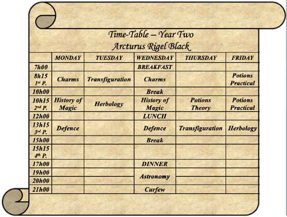

Unveiling Secrets
Every September Dumbledore dragged Severus Snape away from his immensely busy schedule in order to attend the annual Head of House meeting. It was long and tedious, largely due to the fact that each Head of House had a slightly different opinion on every single issue, and it was a rare third Friday in September when Severus Snape learnt something from the Head of House meeting he either cared about or didn’t already know. As such, it seemed to him to be a phenomenal waste of an evening. The only reason he went was to prevent Albus from exacting some form of petty revenge, the results of which would undoubtedly be tacky and/or headache inducing.
In 1986, when Severus last missed a staff meeting, the Headmaster cheerfully asked the house-elves to paint the Potion Master’s cauldrons pink. Without telling him. Even better was the Headmaster’s idea to then construct a selective illusion of plain black pewter over the cauldrons, keyed to Severus’ magical signature. Only Albus, Severus later reflected, would throw around such enormously difficult magics on a mere prank. Imagine his surprise when, upon entering his classroom on Monday morning and taking a cauldron out of his cupboard to demonstrate a new potion for his NEWT students, his entire class burst into laughter. The gleeful noise was unprecedented in his classroom, and though Severus had quickly unraveled the illusion and spelled off the abhorrent colour, the story had spread like wildfire by lunchtime, and Severus had never missed a staff meeting since.
Whatever else could be said for the Headmaster’s sick sense of humour, his methods were certainly effective.
So here Severus sat, silent and unimpressed by his colleagues’ inconsequential natterings, nursing a cup of strong tea and waiting for the Headmaster to arrive so that they could get this farce of a meeting started. He would never admit that he found his fellow Heads of House mildly less irritating than the rest of the Headmaster’s merry men, though he had a sneaking suspicion that the other three considered themselves close personal friends. If he did not disabuse them of this notion, well, that was his business.
Albus arrived, finally, and they begun the meeting with the usual start of term announcements, followed by the opening of the floor. Minerva, as usual, seized it with a vigor belying her years.
“We really must decide what we’re doing about Marcus Flint,” the Head of Gryffindor said briskly, “He got away with obvious and flagrant plagiarism all last year, and I admit we got a little sidetracked by the sickness, but we’ve let it go on too long.”
“I must say, it doesn’t seem to have changed at all this year,” Pomona put in, “So we can at least be sure whoever is doing Flint’s assignments didn’t graduate last year.”
“But we still don’t know who is doing them,” Filius said, “And without either that or some other significant proof, we can’t punish Mr. Flint.”
“Exactly,” Severus spoke up on Flint’s behalf, “Additionally, I must question whether in this case Mr. Flint truly needs to be punished at all.”
Minerva sighed loudly, “Here we go again. Pray, tell us, Severus, exactly why one of your snakes should yet again receive preferential treatment.”
You’re one to talk, Severus thought rather snidely, thinking of all those miserable lions got away with, but he merely said, “Tell me, Minerva, why do we assign children homework? Is it to punish them?”
“Certainly not,” Filius piped up, “It’s to help them learn, and also to gauge their rate of learning and understanding.”
“So we are in agreement that homework is for the student’s benefit, not our own?” Severus asked rhetorically, ignoring Minerva’s scowl, “In that case, it seems to me that Mr. Flint has recognized the purpose of homework and made a rather sound judgment call concerning the use of his time. If he already knows the material, what is the purpose of forcing him to regurgitate it to his professors, when it is a waste of both his time and ours in having to grade one more essay?”
“It is not for the student to decide what he does or does not need to do—” Minerva started, but Severus broke across her.
“Then perhaps we should let the test results, impartial as even you will admit, decide for us,” Severus pulled out a roll of parchment he brought for this very eventuality and passed it around, “Marcus Flint received straight O’s on his OWLs this year, and I do not believe I exaggerate when I say he would have done just as well had he had the chance to take them last year.”
“Oh, my,” Pomona raised both eyebrows at the roll of parchment, “He did indeed. And in so many subjects, too. Arithmancy, Runes, and Care of Magical Creatures. I don’t recall him being in that last one, though…”
“He wasn’t,” Severus said, smirking just a smidge, “He sat the exam without taking a single class. As I understand it, he studied for a few months with Alesana Selwyn, a well-known creature enthusiast, before registering for the exam. Clearly, he finds classes here at Hogwarts both slow-paced and unnecessary to his studies.”
Minerva pursed her lips, but even she could not fail to be impressed, “He is bright, there’s no doubt about it, but the fact still remains that he is both flouting academic expectations placed on him by his professors and forcing another student to do his work. No matter how brilliant he may be, it is no excuse for laziness and bullying.”
“Except we don’t have proof of the laziness or bullying,” Pomona frowned, “Because he turns in all his assignments, and we’ve yet to hear a whisper of complaint from another student. What can we do except watch and wait?”
“Have we really no inkling of who the other student might be?” Filius asked tentatively, “We know it wasn’t one of last year’s seventh years, because the work is the same voice this year, which makes it all the more likely that it’s either a sixth or seventh year now. It might be a fifth year, but I don’t see Flint getting a fourth year or younger to do his OWL-level homework last year.”
Minerva coughed awkwardly, and spoke up, “I may have a name… it seems incredibly unlikely, but the similarities between the work are… notable.”
Severus could tell from the look on her face that she was speaking of one of her little lions. It galled her something bitter to ever admit that one of her charges might be less than noble.
“Who, Minerva?” Filius asked, “I’ve not seen any similarities in the writing style among my other upper-years.”
“It’s not the style that is similar,” Minerva said carefully, “It is the content. I’m speaking of Percy Weasley. His essays are written in an entirely different tone and voice than Flint’s are, but he talks about very similar things. He has similar takes on the subjects and he approaches them from the same angle more often than not. Mr. Weasley also often brings questions to class, which I’ve noticed tend to relate to things written in Mr. Flint’s essays. All in all… it is a disturbing trend.”
“Perhaps, but Percy Weasley?” Pomona repeated incredulously, “He would no more condone cheating than hand in his prefect badge. He would be the last person to do Marcus Flint any favours, excepting perhaps Oliver Wood, and the first person to report an attempt at bullying or blackmail, even on himself.”
“I would have thought so, too, but…” Minerva shrugged helplessly, “Well, can the rest of you keep an eye on those two students’ work? Perhaps I was mistaken, but if not…”
“Mr. Weasley would be punished as well, you realize?” Filius put in sadly, “He contributed to the cheating, whether under duress or not.”
“I am aware,” Minerva said stiffly, “Nonetheless, justice must be done.”
Severus was tempted to roll his eyes at the sheer dramatization going on in the room. He was only thankful the Headmaster had not spoken up yet, as there was only so much sap and drivel he could handle in one conversation, “Personally, I still do not see any harm being done.” The other Heads of House shot him exasperated looks, but Severus went on, “Mr. Weasley’s grades have not slipped even a point over the last year. If he is the one doing extra work, it would appear to be only to his benefit. He studies twice as much, does well, Flint doesn’t waste his time, still does well, and everyone wins. I have yet to see a downside to this situation, despite the technical rule infringement involved.”
Not to mention the fact that Severus seriously doubted it was Weasley’s work. Though there might be a connection to the Gryffindor prefect… it was as if his mind had all the pieces, but couldn’t quite grasp their relation. Ah, well. It would come to him.
“That’s rather rich coming from you, Severus,” Pomona pointed out with good humour. It was true Severus was usually quite the stickler for the rules, but in this case it was in the best interest of one of his students if he expressed leniency, so he did. It was really as simple as that.
“Nevertheless, Severus does make an interesting point,” Albus finally put in, “It seems to me that there is not yet any proof of wrongdoing, though there is smoke enough to start gathering fire hoses, as the muggles would say.” Severus very much doubted the muggles ever said anything of the sort. “In any case, keep an eye on the situation and we shall see if something more definite comes of it. That is all we can do for now.”
Minerva looked torn, but she willingly let the conversation flow to other matters. The rest of the items on everyone’s agenda had little or nothing to do with Severus, and so he largely ignored the proceedings until the topic of Slytherin’s number one trouble magnet, Rigel Black, was brought up by Albus himself.
“I’m sure I don’t need to remind you all of the unfortunate events of last spring. As the four of you know, Quirrell was eventually identified as the party of immediate guilt concerning the introduction of the sickness to our school, and has forthwith been let go because of it,” Albus said, “What is still of pressing concern, however, is not the instrument of the sickness, but that of its cure. Rigel Black. A surprising young man, as I’m sure we can all agree. Why, just this time last year we were discussing his apparent lack of magical ability to speak of, and now we find ourselves stunned by its depth and scope. Thoughts?”
“I suppose you are referring to his seemingly unique ability to enter into a person’s mind by means of their magical core?” Minerva clarified, “Well, I don’t know much about it, but I can say that after the first couple of months his academic performance turned around dramatically. You got him a new wand, did you not, Severus?”
Severus inclined his head, “Indeed, he was using an unmatched wand, and on top of that suppressing his magic to an unbelievable degree. Headmaster, I’m sure you’ve noticed the boy has no discernible magical aura.”
Albus nodded thoughtfully, “I noticed in the Hospital Wing when young Mr. Black woke Mr. Malfoy from his coma. Very odd in a child, though not entirely unheard of.”
“Indeed,” Severus said, “But Mr. Black’s magical suppression was not entirely the result of psychological trauma. In fact, it seems to be mostly conscious, though there is an unavoidable unconscious element which prevents him from using his full potential even now that he directs his magic consciously. He has extraordinarily good control over his magic, which is both what prevented him from using magic early on when he was not committed to exercising it, and what I believe affords him a unique creativity in the usage of his magic.”
“Yes, well put, Severus,” Albus said, “Young Mr. Black, simply speaking, has such control over his magic that he is able at times to work outside of the normal bounds of formed magic. By this I mean that it may be possible for him to exercise his magic in a way that he has not been taught a spell or form for, much like the accidental magic of childhood, except willfully harnessed. There have been cases of this in the past, the most notable of which in the last fifty years or so was Tom Riddle, and generally such control over magic is a sign of a powerful burgeoning wizard. It is hard to gauge Mr. Black’s potential, however, as the majority of his magic is, indeed, suppressed. He has no aura to read, and even the levels of his magical core are hard to estimate due to its elemental nature.”
“Fire?” Filius guessed, “It’s always the hardest to tell with fire-types, because a lot of their magical energy is hidden in potential, waiting to combust and create energy at a moment’s notice. Endurance is really the only way to judge a fire-core.”
“Of which he has plenty,” Severus said, not bothering to hide the pride in his voice, “Black’s levels are well above normal, if the amount of magic he can continuously imbue in high-level potions is any indication.”
“Do you think he’s going to be Lord-level?” Pomona asked thoughtfully, “Sirius Black was certainly nothing to sneeze at, though I don’t remember Diana Black having an extraordinary level of talent. She was hardworking and driven, but not naturally gifted as it seems Rigel is.”
“Unlikely,” Minerva said, “There is one Lord-level born in a century, statistically speaking, though I’m sure he will be a credit to the school by the time he graduates.”
Long before that, if Severus Snape had anything to say about it.
“Regardless, we must keep a close eye on Mr. Black as well,” Albus said, “He has already shown himself to have hidden depths and talents, and there is nothing more dangerous than an untrained talent. If he shows any more unusual gifts, we will be sure to get him the training he needs to harness them beneficially.”
The meeting concluded shortly afterwards, and Snape adjourned to his quarters. Though his body moved at a slow pace, his mind spun fast with deliberation. Flint, Weasley, Black, magic, power, knowledge. There was some sort of connection he was missing, but at the sight of the summer homework he had yet to grade stacked on his desk, Severus put those thought away and turned to more practical matters. The school year had only begun, after all. There would be time for unraveling puzzles later.
*
Lionel Hurst had never been called a gossip. Neither had he, to his not inconsiderate knowledge, been termed a busybody, a newsmonger, or even a rubberneck. It was true that his mother often accused him of dropping eaves, and occasionally he had been known to snoop if the situation warranted it, but a gossip? Certainly not. For gossiping implied a penchant for passing on what one knows, and Leo would certainly never be accused of that. His lips were practically sewn together, in fact, but his ears… well, that was a different story. If Leo was the head of the most extensive network of informants and spies in country, including those numbskull Aurors with their fancy “monitoring” spells, well, it was because Leo listened. His ears were everywhere; they missed nothing of import in any part of the wizarding community. If a fly dropped dead in Newport of mysterious causes, Leo heard a fourth-hand account of the incident two hours later.
The point was, Leo was always listening, and if someone else happened to be talking—well, gossiping—at the same time, well, that didn’t really make him a gossip, did it? Just an opportunist. With his compunctions thus mollified, Leo settled more comfortably in his chair at Miss Betsy’s Beauty Boutique and opened his ears a little wider. A couple of witches under the dryers across the room were having a very interesting conversation, and Leo did not want to miss a bit of it.
“—being very closed mouth about it,” the witch with about eight pounds of curlers on her head was saying to her friend, “I mean, you’d think since we’re the ones living just downstairs that we’d deserve to know just who they’d rented it out to. Could be some kind of hoodlum. Or worse, a Ministry spy!”
Leo peered over the top of the Witch Weekly magazine he was holding to remain inconspicuous. The witch-in-curlers’ friend didn’t look convinced, but she did look intrigued.
“A Ministry spy? Oh, Gale, what will you come up with next?” she said, flapping her hands with their still-wet Wonder Shine on the nails at her friend. The nail-polish changed colour abruptly, becoming a bright sky blue. “Oh, no! Now look what I’ve done. Go back!” she flapped her hands again, and the polish turned a sunny yellow, “For Merlin’s sake, I’ll have to cycle through all the colours again.” So saying she continued to flap her hands rapidly until the nail polish changed to green, purple, red, and finally to a pearly pink she was apparently satisfied with.
“You never know, Patricia,” Gale insisted, eyes wide with more than that sticky Magic Mascara stuff, “It pays to be careful, especially in times like these. Why, he could be a dark wizard!”
Patricia pursed her lips and gave her friend a very exasperated look, “Didn’t little Clara Botting say it was a boy living in number eight? How could a boy be a dark wizard or a Ministry spy? He’s probably an orphan whelp, or his parents run off and left him. Nothing new around here.”
Leo’s ears twitched and he frowned at the article a few inches in front of his nose. The words “Seven Spells to Charm your Prince Charming (Without Him Suspecting a Thing)” jumped across the page, but Leo wasn’t really seeing them. An orphan kid living alone in the Lower Alleys? He’d better send someone to check on the lad. Maybe they could find him a place in the Court as a runner, or perhaps Solom could use an assistant. No child should have to fend for himself—not while he was the Rogue.
“Well, yes,” Gale admitted, “Though that was near the only thing she did say. Her mother came over and scolded her something fierce for talking about ‘that dear Harry boy’ behind his back. I wish I knew what those Bottings have got to be so tight-lipped about. I mean, I’ve lived at number seven, Dogwood Lane for near on ten years now. I’ve a right to know when some strange lad moves into my own unit, and old Mrs. Whitlock should have told me she’d rented the place out anyhow.”
“I tell you, Gale, nobody has basic manners anymore,” Patricia said sadly, “Oi! Betsy! This dryer is much too hot!”
Miss Betsy came running over and waved her wand over the dryer in question a few times. The dryer itself didn’t actually do anything, as far as Leo knew. It was just an aesthetic way to contain the warming and de-hydrating charms. Still, the old betties liked the ritual and pageantry of a muggle spa, so they kept the pretence. When Miss Betsy had left once more, the two middle-aged witches resumed their conversation.
“I just don’t see why you can’t go upstairs and see the new tenant for yourself,” Patricia said, “I mean you’ve complained about it, you’ve asked the Bottings about it, so why don’t you do something about it?”
“Don’t you think I’ve tried?” Gale snapped. She rolled her eyes, “The boy never answers the door. He never goes in or out, though of course Mrs. Whitlock did have a Floo connection, so who knows what hours he keeps. Still, you’d think he could take the time to introduce himself.”
“Well, what sort of visitors does he get? You could ask one of them about the boy,” Patricia suggested.
“He doesn’t get any,” Gale shook her head, “The boy must live like a ghost, whoever he is. Never has the lights on at night, either. Frank and I think perhaps he’s a might strapped for cash, and doesn’t want to use the utilities too much. It would certainly make sense. The lad’s as quiet as a mouse. Never plays the wizarding wireless—and believe me, we’d know considering how thin the walls are. Probably doesn’t even own shoes, since we never hear him walking about. That or he’s a cat animagus.”
The two witches twittered at one another for a good minute over the joke, and Leo only restrained himself from rolling his eyes because they were visible over the edge of the magazine.
“Surely you must know something about the boy,” Patricia said slyly, “I know you, Gale, if there’s a plump little tidbit within arms reach, you’ve got your teeth in it, sucking out the juice.”
Leo privately reflected that that was a perfectly gross way to phrase things.
“Well, little Clara did say one other thing before her ma pulled her off by the ear,” Gale said, drawing it out with relish.
“Don’t make me beg,” Patricia huffed, “Go on then, what was it?”
“She said,” Gale leaned in close and Leo had to cast a quick sound amplification spell to catch the rest of it, “That the neighbour boy had the prettiest green eyes she ever did see.”
Patricia groaned out loud, “You tiresome hag, you really had me going. Green eyes indeed, I thought you were gonna say he was a runaway prince or something. Why do you always get my blood nice and stirred and then leave me with something so ordinary?”
“Oh, you’re just too much fun to tease, Trish,” Gale chortled at her friend from behind her own neon tips.
Their conversation moved on to other things, but Leo was caught up in his own thoughts and couldn’t be bothered to pay attention to them any longer. A green-eyed boy named Harry? It couldn’t be the same Harry, of course, but on the other hand… what were the odds? Perhaps he’d have to pay Dogwood lane a little visit. Though why Harry would say she had gone to America if she was really staying in the Lower Alleys, Leo couldn’t fathom. Not that he could ever fathom that lass. She was something else, his Harry.
His musings were interrupted when Witch Weekly was ripped from his grasp rather rudely. He looked up into familiar hazel eyes and couldn’t keep the grimace of resignation off his face. He might have known. Who else could catch him unawares?
“Leo, my lad, what a surprise,” Eleni Hurst smiled down at him in a way that Leo thought was notably a bit evil, “Finally come to get your hair cut? Wonderful.”
Leo gulped, “Mum, what on earth are you doing here?”
His mother raised an eyebrow, and glanced about the salon, obviously unimpressed with his venue of choice for the afternoon.
Leo tried again, “You know this is a beautification parlour, don’t you, Mum? What would you want in such a place when you’re so naturally beautiful already?”
Eleni Hurst chuckled dryly, “Too forced, Leo, entirely too forced. You’re not getting out of this one with that silver tongue of yours.”
Two hours and one entirely overpriced haircut later, Leo ran—yes, he would admit it to himself, ran—from his mother’s clutches and wandered down Dogwood Lane. He contemplated the front door for numbers seven and eight for a moment, but really, what kind of a Rogue would he be if he knocked?
Leo cut around to the backside of the buildings on Dogwood and counted the windows until he reached the one he was looking for.
I’ll just take a quick peek, Leo thought as he performed the selective sticking spell he’d learnt by the time he was eight on his fingertips and toes. If no one is home, they won’t be there to mind my peeking. If it’s some other Harry who lives here, I’ll offer him a place in the Rogue, and if it is my Harry, well, I’ll be due for some explanations.
Win-win-win, he thought happily as he pried open a window with the ease of long practice. He dropped silently to the dusty floor—whoever Harry is, he or she really needed to learn the Evanesco charm—and straightened up to look around at… nothing. There was nothing there. Leo frowned, and crept silently into the next room over. It, too, was entirely empty, except for a few counters built into the wall indicating the room was supposed to be a kitchen. He looked through the entire flat, and didn’t find a single trace of life. No furniture, no pictures on the wall, nothing. Just a jar of Floo powder on the fireplace mantle in the living room.
“Well, that’s not suspicious,” Leo said to himself, mildly amused. Either someone was playing an elaborate joke on the lady who lived in number seven, or there was something peculiar going on.
Leo ran a hand through his hair and blew out a quiet breath, thinking hard. Maybe his Harry had rented the place, and then… gone back to school in America. That made no sense. Who would bother to rent out a place they weren’t going to live in? Maybe she’d lived there all along, and had really been flooing here all those times he walked her to the Leaky Cauldron. Maybe she wasn’t Harry Potter at all. Maybe she wasn’t even a girl! After all, he’d only taken her word for it…no, no, his mother knew she was a girl right away, so that, at least, was true. Still, if she’d lived there before, she would have either left the furniture in anticipation of her next summer break, or she would have stopped renting the flat if she’d moved out.
Plus, Gale from the beauty parlour had made it sound like this Harry was a relatively new neighbour, and she’d also said she’d never seen him before. That would only make sense if Harry had rented the flat at the end of the summer, and gone back to school before moving in.
But why would Harry do that? Leo shook his head, his Harry had parents, and a place to live, and went to school in America. It just didn’t add up. He realized he was jumping to conclusions. There might be other, real boys named Harry with green eyes about the Alleys, though why they would rent a flat and not live in it he couldn’t guess at either. On the other hand… Harry had been working at the Storeroom all summer, saving up for something big. Was this it? What if she hadn’t been planning to live in it at all? What if the flat was a fall back, some kind of safe house where she could go if something went wrong? Leo had always got the feeling that Harry was involved in something heavy, and Krait agreed. Was she anticipating some kind of trouble, and needed to have a place ready to hide?
He didn’t know, but he did know that he would have to keep an eye on Dogwood lane. And probably he should keep an ear at that school in America, as well. If he got wind that Harry did a runner, at least he’d know where to find her, and maybe help, if she’d let him.
Leo left the flat as silently as he’d come, all traces of footprints in the dust wiped clean with another handy spell he’d picked up when he was just a lad. He had an owl to send to one of his acquaintances in the “states, and maybe then he’d stop by the Gobstones tables in the park. One could always find good gossip—err, news—around a Gobstones table.
*
Most of September passed before Rigel felt she had quite settled into things. When the third Saturday at Hogwarts had come around, Rigel couldn’t believe so much time had gone by. Part of it was that Rigel had been so distracted trying to fit everything into her new routine that she hadn’t noticed the passing of the days, and part of it was that in the three weeks they’d been back at school, Rigel had yet to learn much of anything. Their professors were mostly doing a comprehensive review of last year’s classes, since so many of the students had fallen ill during the spring semester. Everyone had passed their finals, but it was immediately apparent that most of the students” knowledge was spotty at best, even those who were not actually sick, but merely distracted by their classmates’ illness. So Rigel sat through endless lessons on things she already knew, so bored that she began taking her Healing textbooks to all of her classes, not just History of Magic, in an effort to learn something while her school mates caught up on what they’d failed to learn the previous year.
Her friends couldn’t understand why she had such an easy time of it. Most of them had only been sick for a few days, or perhaps a couple of weeks, but there were obvious gaps in their knowledge. The tense and confusing atmosphere last spring just hadn’t been conducive to really paying attention to their studies. Rigel, on the other hand, had spent all summer going over the first year material for her owl-correspondence course, and was nearly bored to tears waiting for the day her professors finally began introducing new material once more.
Then, of course, there was Defence Against the Dark Arts. Although Lockhart certainly did present them with new material, it wasn’t exactly the sort of information Rigel could see coming up on their OWLs.
“I swear to Salazar, if that moron gives us one more pop-quiz on his favourite colour…” Draco glared mutinously at the Head Table, where Lockhart appeared to be either regaling a reluctant Professor Sprout with his slaying of the Bandon Banshee or showing off an incredibly bad singing voice.
Pansy patted Draco’s arm consolingly and passed him the strawberry tarts, “It’s only for a year. Maybe less.”
“Even that’s too long,” Draco said, though his annoyed tone was a little undermined by the way he was piling strawberry tarts onto his plate, “Think of all the damage he could do to our minds in a year. Not to mention our psychological stability. I’ve never felt like braining myself, but fifty minutes in his presence and… ugh. Where did Dumbledore even find this guy?”
Pansy pretended to think, “He was probably flipping through his copy of Witch Weekly and thought, well, there’s a handsome fellow. With a smile like that he’s sure to inspire the students! Let’s give him a call.”
“Really?” Crabbe gazed a Pansy in a blank sort of way.
“No, Vince, not really,” Pansy said with a sigh, “Probably he was the only one to apply. My father tells me it’s exceedingly difficult to convince anyone to take the post at this point, what with the curse and all.”
“Why is it cursed, anyway?” Theo asked, frowning.
“I heard Slytherin cursed it when he left the school,” Tracey Davis commented from across the table.
Millicent shook her head, “It’s only been cursed the last forty or fifty years. It was something Dumbledore did, I think. He ticked off someone with a lot of power, and they cursed the position.”
“Why that position, though?” Theo pressed.
“I would guess that whoever cursed it first applied for it,” Pansy said thoughtfully, “The Headmaster probably denied their application, or greatly offended them some other way.”
“Why would he turn away a wizard powerful enough to cast such a long-lasting curse?” Draco asked, “He already sounds exponentially better than Lockhart, who we’ve yet to see actually do magic.”
“He must have been Dark,” Blaise said knowingly, pushing a lone pea around his plate, “That would have been reason enough for Dumbledore to deny his application.”
“Snape’s Dark,” Theo pointed out.
“Sshh!” Davis glared at Theo, shooting Rigel a pointed look.
“Oh, yes, because no one would ever have guessed that without Theo pointing it out,” Draco rolled his eyes, “Don’t be daft, Davis. Rigel knows Snape’s Dark.”
Rigel nodded easily. It was pretty apparent to Rigel, who had seen Snape’s magical core and felt the characteristically aggressive edge to his magic personally. Then of course there was the fact that his affinity had been common knowledge since her father was at Hogwarts.
Dark and Light politics were a tricky thing in the wizarding world. It was the nature versus nurture argument played out on a dangerous scale. To a certain extent, family had a lot to do with the way your magic leaned. Many people were born with a predisposure to Light or Dark magic, either passed down in their blood or just because of the way their soul was made up naturally. Then, of course, there was the fact that the environment a child spent the first few years of their life heavily influenced their tendencies by subtly conditioning the child to the feel of either Light or Dark magic. Unconsciously, a child began forming their magic in a similar way to what they were used to experiencing. In addition, raw magic itself had the tendency to take on the properties of that which it came into contact with for a long period of time, like it did when absorbed by a stone. A child’s untrained power usually responded the same way, leaning Dark or Light depending on both its natural inclinations and its environment.
Then, of course, there was Neutral magic. As many people as there were that leaned either Dark or Light, there were an equal number whose magic didn’t use magic one way or the other. A large number of the Neutral magic users were muggleborn, leading credence to the idea that Dark and Light leanings derive more from environment than from natural inclination, but there were Dark muggleborns and Light muggleborns, too, so the idea of an inherent tendency toward one or the other couldn’t be discounted.
“Knowing isn’t the same thing as knowing,” Davis was saying angrily, “If you keep giving him definite names, he’ll report us all to his Auror father.”
Rigel raised an eyebrow, but it was Blaise who spoke up scathingly.
“First of all, you have just by your own words admitted to being a part of the ‘us’ you’re so afraid Rigel is going to report,” Blaise said, nailing the girl with a look of uncompromising disapproval, “Second, if we’re going to talk about people reporting on other people to their fathers then we should include everyone guilty of such an action. Looking around at those of us with the wherewithal to even send letters—” here he glanced with amusement at Crabbe and Goyle, “—Rigel is probably the only one I would guess hasn’t been actively informing on the rest of our year to his family.” Rigel was slightly startled to see every single second-year Slytherin glance away at that. She’d known Draco reported on her—had tacitly approved, even, but all of them were sending information home about one another? Interesting. And Blaise was not finished yet, “Third, Rigel’s father hasn’t been an Auror for several years—he works at St. Mungo’s now. Fourth, Rigel moved through our magical cores last spring when he was curing us of the sickness. If he doesn’t know exactly which of us is Dark and which is Light by now, he doesn’t deserve to own a wand. And finally,” Blaise said, looking rather satisfied by the way Davis’ face turned an unbecoming puce in response to his words, “As Rigel is sitting here, and not at the Gryffindor or Hufflepuff tables, I very much doubt he cares at all what our personal leanings are, as even if he is somehow uneducated in the mechanics of the debate he at the very least obviously lacks any prejudice of the sort you were so quick to go into fearful hysterics over.”
Their section of the table lapsed into awed silence as Blaise concluded his impromptu speech. Davis was staring at the table and frowning rather petulantly, though she did not speak up to contradict Blaise’s points.
Rigel cleared her throat a bit awkwardly, and said, “Although Blaise put that very nicely, I will say this now so that there is no confusion.” The eyes of her classmates locked onto her with varying expressions of expectant concentration. Taking in their intensely interested faces, Rigel realized they must have been wondering about this very thing for a while. How long had they been holding back from questioning her about her position on Dark-Light politics? Since the train ride, when she had placed herself firmly in the anti-SOW camp? Earlier than that, even? “I am thoroughly educated on the matter of Light and Dark inclinations, and, as Blaise rightly indicated, could frankly not care any less which camp my friends fall into. As far as I am concerned, it is a personal decision that is both none of my business and beyond my jurisdiction as a fellow magical being to either influence or place an ideological value on. That said, just as it isn’t my business, it isn’t anyone else’s either, so I won’t share what I know about your leanings with anyone, just as I will not discuss others’ leanings with you.”
“You and Blaise talk like Professor Snape,” Goyle said, blinking.
“We speak like academics,” Blaise said, eyes flashing with veiled mirth, “Because we are both well read, are we not, Rigel?”
Rigel tilted her head in agreement. She knew she often sounded like one of the potions journals she liked to read, but it was better to sound too old than too young, in her opinion.
“Getting back to the point, though,” Theo said tentatively, “You’re really okay with us being Dark? I mean not that it would matter if you weren’t okay with it. Um, but you really are?”
“Yes, Theo,” Rigel said, “Magic is magic, as far as I’m concerned. It’s where magic mixes with politics that things get murky.”
“In that case, from now on magic will be magic and politics will be something else, yes?” Pansy looked around at them all, “I think it will be much more comfortable if we can separate the two, in any case.”
“I agree,” Draco said, surprising Rigel and most of the others as well, “What? It’s a sad fact that in recent years the two have become too mixed. When magical leanings determine what politics you support, and your family’s politics determine your magical leanings, well, then we’ve lost sight of the point, haven’t we?”
Rigel thought that was a rather good way of putting things.
She had learnt a lot about Light versus Dark magic in her research into formed magic over the summer. Some of the texts she found were naturally biased, but between the extremes found in the Black Family Library and the other extremes littered about the Potter Library, she thought she had a balanced grasp of the conflict.
It was a common, though incorrect, belief that there were “Light spells” and “Dark spells” and that a wizard had carte blanche in deciding which spells to use. This led directly to the moral implication that if one was a “good” wizard, one would choose not to use “Dark” spells.
The truth was a little more complicated. In reality, Light and Dark referred not to the spells one used, but the way one’s magic was shaped. It was not the wizard who chose the spells they used, but the way they shaped their magic that determined which spells they were capable of using.
All magic was not the same kind of magic. That much was clear to anyone who compared the magic of wizards to the magic of house-elves, for example. But it went further than that. Wizard’s magic wasn’t all the same either, and just as there were things that elves could do that wizards could not, there were some kinds of magic that Light wizards could do, which Dark wizards could not, and vice versa. The spells and rituals that only worked if you shaped your magic in the way referred to as “Dark” were naturally called Dark spells and Dark rituals. The same was true of Light magic. It was simply magic that could only be done by shaping your magic in the form that Light wizards inherently used. The “Light” and “Dark” misnomers were derived from the simple fact that Dark wizards’ formed magic had a more powerful edge to it. Dark magic typically was faster, stronger, and, yes, more dangerous in general than Light magic. It had an… aggressiveness to it that was necessary for performing curses like the Unforgivables. Because the most destructive curses could only be cast by those who wielded magic in the Dark way, Dark magic had a bad reputation.
In the same way, there were some spells that one could only perform by using magic in the Light way. Light magic was slower, but very precise. Light magic could create things of detail and delicacy. It wasn’t that Dark magic was less complicated—some of the advanced Dark rituals were extremely complex, taking months to bring to fruition—but it was less straightforward. The way Dark wizards formed their magic left a wild quality to it that made it sometimes unpredictable, and not so suitable for Light spells, which required exact parameters and a strict form. With Light magic, a wizard could charm a toothpick to paint a mural of the Sistine Chapel on a butterfly’s back. Many upper level Healing spells, which required an exact outcome to ensure patient safety, were also only usable for Light-oriented wizards. If a Dark wizard attempted the spell, at best it failed and at worst it seriously compromised patient safety.
Of course, Dark magic had its own, very strong and very fast, way of Healing, just as Light magic had very precise ways of maiming a person for life. In all honesty, it would be more accurate to refer to one kind of magic as blue and the other as red. Blue can’t be used to make orange and Red can’t be used to make green, but they both can be used to make purple.
In the end, magical leanings were about family tradition and personal preference, and morality had very little logic to do with it. Unfortunately, Dark magic’s often violent-seeming nature caused wizards of Dark leaning to be treated with suspicion. The theory was something like this: Only someone who owns a gun can shoot a gun, and though it may be true that not all people with guns would shoot them, the best policy is to… register… the people with guns, so that if someone does get shot they know who to blame.
When politics joined the debate, of course, things became even more complicated. Nothing was inevitable. The Bones were traditionally Neutral in their magic usage, but almost always chose to put their lot in with Light-sided politics. Sirius came from a long line of Dark wizards, grew up in a Dark environment, and even used his magic in the Dark way, yet he, too, chose Light politics, though it was more of a way to distance himself from his family and to benefit those he cared for than for an ideological principle concerning magical leanings. Sometimes a wizard from a Light family chose to vote Dark or simply ended up Dark magically speaking by chance, and vice versa, though such a thing was usually looked upon as a betrayal by the more traditional families.
In the end, Rigel firmly believed that good and evil existed, but she didn’t think they were embodied in Light and Dark magic. It was people who shot people, not guns. It was evil wizards who caused destruction and violence, not Dark wizards or even Dark magic.
“So what are you, then?” Theo asked curiously.
“Light, obviously,” Davis sneered, “Look at the people he grew up around. His father is Light, and those Potters are practically incandescent.”
Rigel frowned, wondering where Davis had got the idea that Sirius was Light. His magic had developed in a Dark environment, and the tendency for Dark was deeply rooted in his blood in any case. That was exactly the kind of confusing of politics with actual magical affinity that people should be more careful about.
“It’s none of our business,” Pansy said primly, though she couldn’t quite hide her own curiosity.
“I mean, it sort of is…” Theo said tentatively, “He knows all of ours, after all. Turnabout and all that.”
Rigel considered this. It was true she knew of their affinities. As might be expected, considering their families, all of their year had a Dark affinity, except Pansy, who was Light, and perhaps Blaise, whose magic Rigel hadn’t got a very good read on. Of course, Rigel could have guessed that after their first week in Transfiguration if she’d known what she knew now.
Basic Transfigurations, like most general magic, were classified as Neutral. The term “neutral” was misleading, because what was meant was that anyone could do basic magic, those with a Light edge, a Dark edge, or those with no lean to their magic. In reality, there were high-level Neutral spells that were truly Neutral in that one had to have perfectly balanced magic to accomplish them—neither Dark nor Light magic would work with those types of spells. But in any case, Transfigurations were very distinct when performed by Light, Dark, or Neutral magic. When Draco transfigured a match into a needle, his match practically exploded into a needle. The change was forceful and instantaneous. Pansy’s match, on the other hand, changed slowly but seamlessly into a needle with delicate precision.
Rigel’s Transfigurations were just erratic, like everything else about her magic. It wasn’t like before her magic had started working with her—the spells always worked nowadays, but sometimes they worked instantaneously, and other times the magic took its sweet time about it. Still other times it changed one part of something first and then the other part a moment or two later, and a couple of times Rigel could have sworn the magic had changed the object she was working on to something else entirely before Transfiguring it correctly. It happened so fast, however, that Rigel couldn’t be sure.
“I suppose I’m Neutral,” Rigel said after a long moment of contemplation. In truth, she didn’t know what her magic was. It seemed fickle, sometimes manifesting with a Dark edge, other times so refined it had to be Light, so Neutral was probably the safest guess since she didn’t know for sure. At times she wondered what was wrong with her magic, but those thoughts weren’t terribly constructive, so she tended not to worry about it.
“Really?” Draco looked a bit skeptical, but took another bite of strawberry tart without questioning her further.
As they headed back to the dorms, Draco spoke up hopefully, “So, Quidditch tryouts are tonight. Are you coming, Rigel?”
Rigel prevaricated automatically, “I don’t know. I mean, you said Flint’s really only looking for a beater, right? Usually I play chaser…”
As expected, Draco turned cajoling eyes on her, “Come on, Rigel, try something new! I bet you’d be a fair beater. You’re pretty good with hitting those little practice snitches with me, and a bludger is a much bigger target.”
“Heavier, too, though,” Rigel commented, rather enjoying dragging it out a bit, “And to hit an independently moving target is probably harder than hitting a dead ball with a predictable trajectory.”
“Oh, just do it, Rigel,” Pansy said. Her expression was utterly resigned, “There’s no harm in trying out, and Draco would never forgive you if you didn’t. I guess this is what I get for befriending boys.”
Rigel smiled slightly, “I suppose I could try out. Maybe you should, too, Pansy. If you can’t beat them…”
“Run the other way?” Pansy suggested wryly, “Thanks but no thanks; the spectator’s box is the closest I’ve ever wanted to be to a Quidditch game, and even that is a strain on my sensibilities.”
Draco and Rigel exchanged looks of mock disappointment, before breaking into amused grins. Pansy shoved them both playfully and they spent the rest of the trip to the common room trying not to laugh—they couldn’t be seen chatting gaily in the dungeon halls, after all. What would the Gryffindors think?
*
That afternoon they headed out to the Quidditch pitch for tryouts, and if Rigel had thought last year’s trial was intimidating, it was nothing on what Flint had cooked up for this year.
First, before ever trying out for individual positions, each contender had to complete a general flying test in the form of an obstacle course. Rigel didn’t know which Master Spell-crafter Flint had blackmailed into setting up the field for the Slytherin Quidditch team, but more than half the applicants dropped out upon the mere sight of what awaited those determined enough to try the course.
The goal was to make it three laps around the pitch as quickly as possible, but Rigel felt that if seven players managed to make it around three times at all it would be a miracle of magic and sheer dumb luck. They were limited by means of a hyper-extended Ceiling Charm to a vertical span of about thirty feet above ground level around the whole track. No one knew this, of course, until the first unfortunate fourth year shot right into it while trying to fly over the first obstacle—a giant metal blade that swung like a pendulum across the track. The kid smacked against the invisible ceiling barrier with a sickening thud and spiraled weakly to the turf (which was luckily just thirty feet below him and reinforced with a Cushioning Charm for just such an eventuality), nursing a concussion.
Needless to say, the second kid in line experienced a sudden drop in gumption and graciously insisted someone else could go next.
After the razor-pendulum was a series of hoops that they had to fly through to get credit for the lap. Some of the hoops were placed awkwardly horizontal, so that one had to come at them from the top or bottom and risk plowing into the ground or the barrier if they attempted the manoeuvre too fast. After the hoops was a stretch of field that had been placed under what looked like a localized Weather Charm, specifically a rather nasty Storm Spell. That entire section of the course was waterlogged, with aggressive winds and pelting rain to test the flyer’s ability to handle extreme Quidditch conditions. Rigel caught a glimpse of lightning crackling in the heavy black clouds from where she stood next to Draco in the line up and quickly averted her eyes. That was going to be ugly.
Immediately after the rainy segment, they would be faced with three cannons. One of the cannons—and they wouldn’t know which one until they got there—would fire a ball the size of a cantaloupe into the air in front of them. If the ball was yellow, they were to catch it like a quaffle. If it was blue, they were to bat it away with their fists, and if it was red they were to avoid getting hit by it at all. This was a test of both hand-eye coordination and split-second decision-making. Of course it went unsaid that at that point their fingers would be slick with water and probably freezing after flying through the rain, adding another layer of difficulty to the task.
Then there was a stretch of pitch that looked like one thirty-foot-tall chunk of transparent Swiss cheese. From what Rigel could tell, it was some kind of three-dimensional maze, requiring the flyers to make their way into tight cylindrical holes and find the path to the other side without doubling back too much. It would test manoeuvrability and also endurance under anxiety and pain, for, as Flint cheerfully informed them, the entire construct was lightly charged with a Static Spell. If they brushed up against the sides of the maze while manoeuvring through it, they’d receive a sharp sting for the mistake.
Rigel supposed it would also test a candidate’s short-term memory, if they managed to make it back around for a second go at the maze.
Once through that, it was a straight shot to the finish/start line. The catch? That section of the track was where the bludgers were. Flint had rounded up an even six of the mindless things for the occasion, and they bounced around like deranged pin balls between the edges of the course, the ground, and the Ceiling Charm. The goal in that segment was fairly simple—don’t get pulverized.
After that they just had to do it all again. Twice.
“Well, if the Gryffindors aren’t impressed by this, they mustn’t have eyes in their heads,” Pansy commented from where she was keeping them company in line, “It’s not too late to come sit up in the stands with us sane folk,” she added to Rigel, eyeing the swinging scythe with wary distaste.
“Thanks, Pan, but I’m afraid from now on you’ll have to be sane enough for the three of us,” Rigel said, clenching and unclenching her fingers around the smooth handle of Archie’s Comet 260. It was almost identical to her own Comet, and she had worked out the kinks in a quick warm-up with Draco, so she wasn’t too concerned about the difference.
Pansy took her leave of them with a last admonition to be careful and not get themselves killed, to which Draco cheerfully replied that some things were worth dying for. Their blonde friend just shook her head and wished them luck before sauntering off toward the stands.
Not long after the fifth contender had been disqualified for either skipping a hoop or being blown off their wind by the Storm Spell, Flint sidled up to them and raised an inquiring eyebrow.
“So?” the captain said, a smug tug playing at the corner of his lips, “What do you guys think?”
“Impressive,” Rigel said easily.
“The spellwork, not the competition,” Draco added without missing a beat.
Flint chuckled appreciatively, “Well, thanks.”
Rigel blinked, “You did all this yourself?” Flint sent her a knowing look and Rigel flushed with embarrassment. For some reason she always forgot how utterly brilliant Flint was. Whether it was the way he comported himself or his general laid-back, gruff approach to life, she was always tempted to underestimate him—and she was the one who should know better than anyone how smart he was. She was only doing his homework because he had no need to, after all. “Right. It is really well done, Flint.”
“Also, a bit vindictive,” Draco commented as they watched a weedy-looking sixth year’s broom catch fire from an unlucky graze with a bolt of lightning.
“Madam Pomfrey’s been notified to expect patients. At least no one can say they didn’t know what they were getting into,” Flint said, not a shred of remorse on his face as yet another hopeful was disqualified, “Oh, he made it to the cannon volley. Too bad he can’t tell red from yellow.”
Sure enough, the little third year had made to catch the ball automatically before realizing it was red—but by then it was too late to avoid the projectile, and it smacked into his shoulder despite the third year’s attempt at dodging.
“What happens if no one makes it through?” Rigel asked curiously.
“Don’t speak too soon,” Flint said, lifting his chin toward the next contender.
It was Adrian Pucey, she saw, and he was through the first obstacle so fast she nearly missed it. Pucey flew through the hoops nearly as quickly, rolling and twisting the broom around to get through the more awkward hoops as fast as possible. The Storm Charm didn’t seem to faze him, except to make him bend lower onto his broom and swerve slightly to the side to avoid a strong upper-cutting wind that whipped up in front of him. When the cannon fired a blue ball, Pucey batted it away unerringly, and then he was making his way through the maze, much slower than he had been flying, but still at a remarkably steady pace. He was zapped a couple of times when he had to double back from a dead end, but soon he was out the other side and hurtling with heart-stopping recklessness through the final leg of the course. One of the six bludgers came awfully close to breaking the nose of his broom off, but Pucey pulled up sharply at the last moment and darted across the finish line before the bludgers could make a return pass.
A cheer went up from the line of waiting Slytherins, and a smattering of applause from the sparsely populated stands was heard as well as Pucey headed into his second lap. This one caused him a bit more trouble, as he had hit the swinging blade with bad timing and had to put on the breaks to prevent being sliced in half before continuing. Well, probably the blade was blunted so that no one actually got cut to ribbons, but the effect was still terror inducing.
“Now that is a Quidditch player,” Flint said with no small amount of pride. “Six minutes and sixteen seconds!” he called out to the rest of them, “That’s the time to beat if you want a guaranteed spot on the team!”
The waiting hopefuls cheered eagerly, pressing forward to get closer to the front of the line.
Draco scoffed, “Like anyone will beat Pucey’s time. He’s the best flyer for sheer manoeuvrability on the team, next to you, Flint.”
“I know,” Flint said, “I just want to see if they’ll psyche themselves out or not.”
Rigel grimaced at the riled up competitors suddenly keen to take of the course as soon as possible. Flint’s mind games were definitely in her top three scariest things ever witnessed, right up there with Walburga Black’s horridly scowling portrait and Lord Riddle’s smile. A flash of blue, like a tailored waistcoat, flashed across her mind’s eye for a brief moment as the thought of fear churned the memories in her mind like a stick poking through muddy water, but she blinked it away. She had no time to get distracted by the past.
When it was Draco’s turn, Rigel gave him a reassuring smile and watched him like a hawk as soon as his attention was on the course. She had faith in Draco, she truly did, but if it looked for even a second like he really was going to be sliced into ribbons by the possibly blunted razor blade… well, she and her magic would not be standing by quietly.
In the end, her caution was unnecessary. Draco had been a member of the Slytherin team for an entire year, even if it was on reserve, and it definitely showed. He flew so smoothly that if you watched only him and not his surroundings you could almost forget the obstacles were even there. He brushed through the hoops with practiced precision, and though the thick rain made his bangs drip directly into his face, he still managed to catch the yellow ball launched at him with relative ease. The maze took him a moment or two to puzzle through, but the second and third laps went much faster once he had the rhythm of the course down.
Her friend finished in just under seven minutes, and he landed with a wide grin, cheeks flushed with exertion and pupils wide with excitement.
“That was great, Dray,” Rigel said honestly, “You’re definitely moving on.”
Draco flicked a bit of water from his sleeves at her playfully, “You’d better be there with me, Rye, so don’t mess up.”
“Rye?” Rigel repeated with amusement.
Draco looked briefly away, then back defiantly, “Pansy and I have nicknames. Why not you?”
Since saying “because Rigel isn’t my name in the first place” wasn’t an option, Rigel just shrugged and let it go.
“Then, here goes nothing,” Rigel said. She mounted her broom and rose about five feet off the ground to hover, waiting for the signal. When the whistle blew, she shot off toward the giant swinging pendulum of death. It was a lot more ominous up close, but when compared to the speed of a broomstick, it also appeared to move a lot slower than it did from a standstill. Rigel had no trouble manoeuvring toward the side the blade wasn’t, and immediately focused on not missing any of the hoops that were coming up next. She’d been watching people attempt the course for a good half hour, so she took the path that both Pucey and Draco had taken, as it seemed to be the most efficient overall. It was a little bit cheating, but mostly she thought it was just paying attention and being clever.
She had braced herself against the wind and rain, but was entirely unprepared for the cold. She and Archie had never played Quidditch in the middle of a storm before—Lily would have had their brooms snapped in half for even thinking about it, and really, why would they even want to? The water was one thing, encumbering her as an extra ten pounds of weight absorbed into her robes, and a nightmare for visibility. Not for the first time, she thanked the Polyjuice potion that she wasn’t still wearing contacts, which surely would have been washed away when the rain started getting pushed horizontally at her by the impossible winds. The cold, though, was something else entirely. It froze her muscles and made her want to seize up with discomfort for precious seconds after getting through the rain to the other side. In those seconds the blue ball seemed to come out of nowhere; though Rigel instinctively batted it away from her face when she finally registered it approaching, if it had been any other colour she would have been disqualified.
Grimacing, she made a mental note to be more prepared coming out of the storm on the next lap. The maze she had watched several others make it through already, so she simply followed the path she’d memorized and tried not to touch the edges. One carelessly draped sleeve, however, demonstrated to Rigel exactly how painful a “mild” shock could be when conducted through water-soaked robes and skin. Seriously disoriented by the shock, Rigel just managed to duck a bludger that came careening toward her before she’d even got the tail end of her broom out of the maze’s exit.
Deciding she didn’t want to spend any more time in that section than she had to, Rigel shot forward as quickly as she could while maintaining an irregular flight pattern to throw off the bludgers’ Homing Charm, which acted like a navigational auto-lock on the closest moving non-bludger within the Charm’s range.
She raced across the finish line, hurtled once more toward the menacing pendulum, and began the whole ridiculous process over again. It went better the second time around, and she was feeling pretty confident by the third time she encountered the obstacles. As she made her way through the course for the final lap, it occurred to her, not for the first time, that much of the things wizards got themselves involved in were sheer farce if looked at from a certain angle. Ah well, such was the influence of magic, she supposed, which was a great farce if ever there was one.
Rigel finished with a respectable time of eight minutes and nine seconds. Not as good as anyone who had been on the team the year before, but definitely in the top twelve.
Flint then divided them into who was trying out for what positions and called out the top finishers for each position. Last year’s keeper was called, as well as the potential keeper who had the fastest time. He kept Draco and a fifth year who had a time thirty seconds faster than Rigel’s to try for seeker. The two chasers besides Flint from last year were kept on the pitch, as well as the three fastest finishers among the hopefuls. For beaters, since Derrick wasn’t able to try out, Flint kept Bole, the other veteran beater, and three of the newbie’s with the fastest times—including Rigel, who had placed right in the middle of her two competitors, all three of whom had placed a good minute below Bole.
The beaters and seekers stepped off the field to watch the chasers and keepers try out first. Their tryout was fairly straightforward, just a mock quaffle game, with one keeper at each goal set and the six chasers facing off against one another to see who scored the most goals.
“Great flying, Rigel!” Draco said when the chaser-keeper scrimmage had begun.
“Not as good as yours,” Rigel said, grinning back a bit, “You flew like you didn’t even notice the obstacles.”
“What obstacles?” Draco laughed, “Oh, those old things? Flint has us train with obstacle spells all the time. Didn’t you ever wonder why I’d come back from practice soaking wet, even though it was sunny outside?”
Rigel had honestly never even noticed the discrepancy. She didn’t know if it was because she didn’t pay enough attention to the weather, or, she winced inwardly, if she didn’t pay enough attention to her friends. Out loud, she said, “I thought it best not to ask.”
“Well, Flint likes to keep us on our toes,” Draco shrugged, apparently not noticing how his words were seriously freaking out the kids standing nearest them, “One time he made us practice with deafening spells over our ears, so we had to hone our situational awareness with sight only, and once he cast Hampering Charms on our brooms to make them move slower, but then charmed the bludgers a little bit faster, so that we’d learn to react faster to make up for the lack of mobility. Most of us ended up in the Hospital Wing, but it was an enriching experience.”
Rigel glanced bemusedly at Draco. Her friend had never once described an experience as “enriching” if it caused him physical discomfort. Looking at the kid on Draco’s other side, who was noticeably green in the face, Rigel understood that Draco was telling her this for the benefit of those around them. She thought it was a bit risky, since he might have psyched her out as well as their competition, but maybe Draco didn’t care if he upset her as well, or maybe he had faith in the strength of her stomach.
Deciding to pitch in, Rigel affected an interested but nervously incredulous tone of voice and asked, “So Weather Charms are common, too?”
“Oh, yeah,” Draco said with an innocent smile that should have sent alarm bells through the head of anyone who knew the blonde aristocrat, “We’ve practiced in all sorts of conditions. You’d think the icy rain and snow would be the worst, but sometimes we practice in fog so thick you can’t see the end of your broomstick, much less a bludger coming straight at you. Then there are the days Flint cranks up the localized heating charms in the stadium to desert levels, and won’t let us rehydrate until we get to 100 points. The worst, though, was definitely the plague of locusts.”
“P-plague of what?” The girl who was trying against Draco for seeker finally snapped and rounded on the blonde boy, “You can’t be serious!”
Draco blinked, as if extremely taken aback that someone would doubt such a thing, “The plague of locusts. Once Flint transfigured all the dead leaves on the pitch into a swarm of locusts, which then attacked at random to see how good we were at ignoring annoying distractions. Let me tell you, those suckers bite like nobody’s business.”
Rigel was now hard pressed to keep an amused smile off her face, and from the corner of her eye she could see Bole smirking openly as the rest of the beater and seeker hopefuls gave up their pretence of not listening and gaped with horror.
“What kind of crazy sadist is Flint?”
“I saw Higgs with bites all over his neck last year!” a beady-eyed boy trying for beater exclaimed, “I thought they were from his girlfriend at the time, but now… that’s sick.”
Rigel coughed quickly into her hand to disguise the snort that escaped her. Honestly, how did people believe this stuff? Most of it was probably true to a certain extent, but locusts most certainly didn’t bite—they didn’t even have teeth. Just a hard outer shell that was mostly useful for thickening up Debilitating Draughts. At most one might be able to pinch with its mouth, but there’s no way it would penetrate the skin, and Rigel doubted it would look anything like a teenager’s hickey.
Still, the other three candidates who weren’t already on the team seemed very in awe of this information.
“I thought this obstacle course thing was just intimidation tactics, to test the nerves, you know?” the other potential beater, a beefy boy in a silver scarf that in Rigel’s opinion was highly impractical for flying in, said with a frown, “But if this is the kind of thing we can expect all the time… the prestige of playing on the House team just isn’t worth it.” Without another word, the boy walked off the pitch and didn’t look back.
Rigel sent Draco a surreptitiously impressed look, and Draco just smirked at her. Now it was essentially she and the beady-eyed boy competing for the second beater’s spot, since Bole was practically guaranteed a place back on the team.
Soon enough the chasers were decided, and the keeper position as well. Consistent with what Draco had surmised, the old members kept their spots, and the hopefuls were sent off with disappointed expressions. There was one exception—the girl who tried out for keeper against Bletchley was kept on as a reserve, since she did manage to stop all but one of the goals shot against her by the seasoned chasers.
Flint called out the beaters, of which he was obviously amused to note there were now only three, and explained to them what their tryout would consist of.
“Originally,” Flint informed them, “I was going to give you each a bludger and then see how many times you could hit it accurately through one of the goal posts in ten minutes.”
Rigel felt quite suddenly relieved that he had phrased it in such a way that it was clear such a feat was no longer expected of them. The quaffle goals were an extremely precise target to hit a bludger at. Usually with bludgers, you just had to hit it in the general direction of an opposing player—it didn’t have to connect, it just had to pose enough of a threat that the opposing player stopped whatever they were currently doing, like chasing the snitch or blocking the goalposts, in order to dodge it. This was good, because bludgers rarely stayed on the trajectory you hit them on. They were spelled to veer and swerve, and that was without the influence of the Homing Charms pulling them toward the nearest source of movement. To try and hit one through an inflexible, and just-barely-big-enough quaffle hoop would be nearly impossible.
“Then I thought, what’s the point in that? In a real game, the targets aren’t going to stay stationary,” Flint went on blithely, “And there’s no sense of risk when aiming at a dead hoop. So I came up with a way to really test your skills.”
Rigel didn’t think she was the only one who gulped.
“But before I explain, let me call the seekers over here,” Flint whistled and gestured with two fingers at Draco and the girl he was trying against. They came trotting over immediately, and upon their arrival Flint presented each with a flimsy plastic hoop roughly the size of a single goal hoop. Rigel’s stomach began to sink as she looked from the hoops, to Flint’s gleaming eyes, to the innocently excited faces of the potential seekers.
“I can see by the rapid loss of colour in your face that you’ve figured it out, Mr. Black,” Flint chuckled darkly, “Well don’t spoil the fun before I build up to it. So anyway, I thought moving targets were just essential to a proper beater tryout, and to make it more realistic, the targets would have to be in close proximity to something that was empathetically not a target. Like, say, a fellow teammate.”
The beady-eyed boy stuttered and gaped inarticulately, while the girl trying for seeker looked like she was biting her tongue to prevent from protesting vehemently as she realized what was going on.
“Then of course there’s this part of me that just hates wasted time,” Flint said contemplatively, “And that’s the part of me that came up with a brilliant idea to kill two seekers—er, I mean, birds—with one bludger and incorporate the seekers’ tryouts into this situation as well. For anyone who needs it spelled out, this is how it’s going to go down. Malfoy and Caviet will each have one of these hoops affixed with a sticking charm to the bottom of their brooms. Just to prove to anyone who thinks otherwise that I never put my team through something I’m not willing to do myself, I, too, will have a hoop affixed to my broom for this tryout. As you may have noticed, that means there are three hoops, and three beaters trying out. Incidentally, good job thinning the herd, Malfoy. Now I won’t have to choose a random spectator to make it an even four.”
Draco preened a bit under the praise, though he was still giving the plastic hoop in his hand apprehensive glances.
“Now, each of you will get one bludger—they’ll be colour coded, so don’t try hitting someone else’s unless it attacks you directly—and you’ll have fifteen minutes to see how many times you can get it through your hoop. The hoops will also be colour coded, and Pucey will be my eyes in the sky to keep score. The two beaters with the most ‘goals’ win, but be aware that hitting the person or broom of the one carrying your hoop will result in serious deductions,” Flint said sternly.
“Um, Mr. Flint?” the beady-eyed boy spoke up nervously, “Why are the seekers carrying the hoops? I mean, it’ll be harder for them to manoeuvre with them on, so how will they catch the snitch?”
“They won’t,” Flint shrugged, “No snitches in this game. I already know Malfoy can catch the snitch when he tries hard enough, and I’ve seen enough of Caviet’s flying to assume she’s got talent as well. This tryout’s not about talent, though—I can beat that into you once you’re on the team. It’s about guts. The seekers will be judged on how well they hold up under the pressure of being a constant moving target. Their role in this requires gumption to stick it out, and also trust in their fellow players. One badly timed bludger and you could knock them out of the air, but that’s no different from how a real match will be, so it’s best to get used to it now.”
Rigel thought that was a little bit not at all true. No beater would aim a bludger at a player who was right next to his own player. You went for the lone flyers. The seekers or keepers, the other beaters and occasionally the stray chaser. And that was when you aimed at anyone at all. Bludgers didn’t need a beater’s help in targeting other players—they did that on their own. Most of a beater’s job was to keep the bludgers away from their own players. Catching the other team unawares was usually just a bonus.
Flint stuck the hoops onto the bottom of his, Draco’s, and the Caviet girl’s brooms. He then charmed the one on his broom red, Draco’s blue, and Caviet’s green.
“Bole, you’re red. Black—blue. Tuiggins, you’re green,” Flint said. It did not escape Rigel’s notice that Flint was paired with the most experienced beater, and was therefore the least likely to get hit. Caviet seemed to be a bit leery of the pairings, too, and she eyed Tuiggins’ nervously tapping fingers with uneasy concern.
Pucey brought over three bludgers, one charmed red, one green, and one blue, and when Flint set them free the three beaters took to the skies after their bludgers as quickly as possible. The seekers and Flint took off carefully with their coloured hoops. It was immediately apparent that they’d have to fly awkwardly with their legs tucked up and out of the way if they didn’t want to get an ankle broken by any shots that actually went through the hoops. Still, they seemed to be managing all right, and Rigel had no more time to spare them as she tore through the air after the brutal blue comet streaking across the sky above her.
When she finally caught up to the bludger, she just followed it for a moment, flummoxed. What was she to do now? She couldn’t catch it and wait for the perfect shot like it was a quaffle, but she couldn’t hit it blindly toward Draco’s hoop either, as it was both too far away and at a bad angle for a shot. She considered hitting it softly in Draco’s direction until it was close enough to get a better shot, but without enough momentum the bludger was as likely to go where she hit it as it was to go anywhere else. One did not simply nudge a bludger in the direction one wanted it to take, after all.
As she kept pace with the blue bludger for a few moments more, she saw Tuiggins get off a pretty solid hit on his green bludger towards Caviet. Unfortunately, it was too high, and Caviet was forced to duck and roll swiftly to avoid getting hit in the chest with the glowing green ball. Rigel shook her head at the foolishness. The only way that would have worked is if Caviet had pulled up enough to make the ball go through—
Oh. Rigel blinked at the realization. Well, exactly.
Hadn’t Flint just said it wasn’t about skill? It was about guts—for both the beaters and the seekers. Rigel turned her broom sideways so she could both follow the bludger on its random path and catch sight of Draco once more. He was watching her, seeming content to wait for her to make a move. Rigel whistled sharply just as Flint had done down on the pitch and swung an arm in a motion to indicate he should come closer. Draco seemed to get the idea quickly enough, and he zoomed toward her quickly.
If she couldn’t get the bludger to the hoop, they’d bring the hoop to the bludger. Wasn’t the whole point that the hoop was mobile? Admittedly, an opposing player would never cooperate during a game, but Flint hadn’t said they couldn’t work together, and in Slytherin House that was as good as saying you could.
Soon Draco pulled up beside her, though his movements were wide and exaggerated due to the hoop. “What are we doing?” he shouted over the wind.
“Winning!” Rigel yelled back, “If you give me a straight shot to the hoop at less than thirty feet, I can make it.”
Draco grimaced, but nodded, “No problem. Fly ahead of it and give it a target. It will head right for you, and I’ll keep the hoop directly behind its path.”
Rigel nodded, and leaned forward on her broom. She shot forward, coming level with, then moving past, the blue bludger. She could tell when the Homing Charm on the “front” of the bludger locked onto her. The bludger started shifting ever so slightly in response to tiny variations in her movements. She increased her speed enough to get a good distance ahead of the bludger, but not outstrip it completely, and when she felt she had enough room, she shouted, “Now, Draco!”
She pulled the broom up so sharply it flipped neatly in place and readied her bat in the split second it took her to turn on the spot. The bludger was closing in five seconds, and she had a clear line of sight to where Draco hovered just 25 feet behind it. It wasn’t very far of a distance, and an inexperienced beater might be tempted to hit the bludger with less than full force, in case it missed, so as not to endanger their teammate more than necessary.
Rigel, however, was not so naïve. If she hit the bludger with less than 100%, it dramatically increased the likelihood of the bludger breaking the trajectory and aiming for Draco instead. The Homing Charm could be overcome by brute force, so the only way to make it fly through was to commit totally to the hit, but that also meant that if her aim was off, Draco wouldn’t have time to move out of the way before it hit him.
All of that rushed through her head in five seconds, and before she could lose her nerve she set her sights on the blue hoop and let her bat swing forward with all her might. The crack of the bat against the metal bludger was always somewhat sickening at close range, but as a beater one got used to it quickly. The bludger changed direction with violent energy and careened back toward Draco with all the suddenness of a Bombardment Hex.
Rigel held her breath as she watched the bludger’s path. It looked for all intents like it was headed straight for Draco’s face. She knew, in the logical portion of her mind, that it wasn’t going to hit Draco in the face. They were right above the part of the obstacle course where the Weather Charms had been cast, and because of this there was a serious downward wind created by the vacuum of the spell as it sucked air currents into the charmed space to use in the storm. The wind would pull the bludger down a good three and a half feet at approximately ten feet away from Draco’s position if Rigel had put the correct rotation on the bludger as she hit it, but a very alarmed part of her just realized that no one had told Draco that.
Just as she was cursing herself for not warning him about the illusory trajectory, she realized that her friend was not diving out of the way as any sane person would have done in that situation. Draco was still hovering there, in the exact same place he’d been when she took aim, and the expression on his face was expectant, not worried. Draco, who had no idea she’d ever even played beater before, and had only ever seen her hit tiny little practice snitches with the bat, was not a bit concerned that the bludger flying at his face was about to break his nose.
He trusted her.
The realization was like a blow to the solar plexus, and Rigel was grateful the bludger wasn’t heading for her, because with the way she jerked with the sudden knowledge of Draco’s completely unwarranted faith in her, it would have missed entirely. In the end, Draco was steadfast enough for the both of them, and the bludger did indeed drop at the last moment to swoop neatly through the plastic hoop and continue on its drunkenly careening way toward the other side of the pitch.
Draco whooped and cheered before flying toward her and wrapping one arm roughly around her shoulder in an awkward air-hug, “That was awesome! Let’s do it again. I bet we can get three more in the next ten minutes or so if we’re fast enough.”
Rigel just stared at him, not daring to open her mouth for fear of what would come tumbling out. Seeing him stare down a bludger on nothing more than the faith he had in her abilities, Rigel just couldn’t believe someone like him was friends with someone like her. Draco, with his wildly swept about hair and wide-eyed expression of intense enjoyment, was freedom incarnate. That he could just give in completely and trust in someone like that—in her, of all people—rubbed something raw within her gut. She, who had lied to him since the moment they met, she who couldn’t even tell him her real name, she, who was using this game as a way to subdue her family’s suspicions and as a single, selfish pleasure in her life of sacrificed indulgences, while Draco flew with the freedom of someone who would never pretend to be something he wasn’t, no matter how much easier things might be for him if he did. She could never be worthy of such a gift, and the worst part was that she couldn’t even tell Draco how remarkable his trust in her was, because the comparison would only raise more questions that she would never be able to answer.
“Rigel? Rigel! Time limit? Hello!?”
Rigel snapped out of her thoughts and cursed herself. Her mind always spaced out at the worst possible moments.
“Okay, let’s do this,” she called, “Same pattern. When I call for you to freeze, do exactly what you did before.”
“No problem,” Draco said, grinning, “Let’s show them what we’re made of.”
It seemed that the rest of the tryout was going to be a sweep. In the next five minutes, Rigel and Draco scored twice more with their bludger, and Tuiggins didn’t seem to have got even one. He was chasing a nervous Caviet in circles as he tried to work up the nerve to aim at her again and she tried to stay still long enough to be sure the bludger was going to hit her before diving once again out of the way. Flint and Bole were…
Wait. What were they doing? Flint was hovering nonchalantly on the East side of the pitch, and Bole was on the complete opposite West side, corralling his bludger. Corralling was when the beater needed to control the bludger but wasn’t yet ready to hit it. Instead, the beater teased the bludger by flying in front of it, as Rigel had done earlier, to make it follow the trajectory they chose without getting rid of it yet. There was a famous game from the 1960’s in which one team’s beaters had decided to do nothing but corral the bludgers the whole match, taking them out of the equation completely and letting their chasers, who were world-renowned at the time, work uninterrupted and win the match.
Rigel wondered what Bole was doing with his bludger, though. He wasn’t herding it back toward Flint—instead, he seemed to be flying toward where she and Draco were trying to line up another shot on the edges of the Northwest stands. In fact… oh, crud.
“Draco, look out!” she changed direction before their shot was lined up and absently batted the blue bludger away from them as she shot toward Draco’s position. The blue bludger wasn’t the one they had to worry about, because Bole had just whacked the red bludger right at them—or more specifically, right at Draco, who, with the unwieldy hoop attached to his broom, probably wouldn’t be able to manoeuvre fast enough to avoid the barreling ball.
Draco’s eyes flew to the ball, and when he realized how close it was a grimly resigned look overcame his features. No matter where he moved, the bludger was close enough to follow at this point. Unless—
“Fly toward me!” Rigel yelled, bent double over her broom to get there in time. She wouldn’t have made it if Draco stayed where he was, but when he flew toward her as quickly as he could with that stupid hoop, it brought the bludger toward her as well. It was close—too close—but Rigel managed to bring the bat between the red bludger and Draco’s left shoulder as he darted past her. It was barely a hit, and only moved the bludger back ten feet or so, but that was more than enough time for Rigel to bring her arm back and hit it more squarely when it came round again.
She hit it, not at Bole, but towards Flint, whose idea she was sure that had been. She could practically feel him smirking from across the field, and was almost disappointed the captain dodged the bludger so easily. Then again, he didn’t have it shot at him practically point blank, like Draco had. Bole gave them an indifferent shrug as they glared at him in annoyance, though he did send Draco a slightly apologetic smile on his way back toward Flint.
“That’s time!” Flint roared, holding up his watch. He descended to land at the Eastern goal posts and the rest of them followed suit.
Tuiggins looked keenly disappointed, while Caviet seemed somewhat relieved to be on the ground once more.
“Well, overall I’d say it was pretty pathetic,” Flint said, un-attaching the hoop from his broom and tossing it to the ground with casual disgust, “Tuiggins, you didn’t score a single goal. Black, you scored three, but only because your partner aided you actively. In a real game, that’s not going to cut it. Caviet, you have the nerves of a frightened rabbit, and the only reason I’m not banning you from tryouts in the future is because Tuiggins can’t aim for shit, and frankly I’m not surprised you didn’t trust him enough to sit still. The only one who showed any real guts was Draco.”
“What about Bole?” Tuiggins spoke up, frowning.
“What about him?” Flint drawled, “He’s been on the team for years, and doesn’t have to prove anything to me. So, obviously Draco is going to be starting seeker, and Black will fill the beater position. Any questions? No? Good, get off my pitch then.”
Draco grinned delightedly and punched Rigel in the arm, “You did it! Ha, and you didn’t even want to try out.”
Rigel smiled back bemusedly, “You did it too, Mr. Starting Seeker. Let’s go tell Pansy.”
They jogged over to the stands the spectators were sitting in, and Pansy hurried down to meet them.
“So?” she asked excitedly, “You must have made it, no one else even made any goals.”
“We’re both on the team,” Draco said proudly, “Which means now you definitely have to come to all our games.”
Pansy sighed, but they could see her pride for them behind the surface gesture, “This is what I get for being friends with you two hopeless boys. With Rigel on the team, too, it’ll be nothing but Quidditch all day long.”
“You’ll learn to love it,” Draco said reassuringly.
“And if you don’t, you’ll have manifold opportunities to practice exhibiting patience and false interest over the next six years,” Rigel added thoughtfully.
“And at least you’ll know what you’re talking about when you finally get a boyfriend and he’s interested in the sport,” Draco said with a rather poor impression of a rakish grin.
“Win-win,” Pansy said with extremely false enthusiasm, “And just what do you mean ‘finally?’ I’m barely thirteen, and I don’t see you with a girlfriend hanging off your arm.”
“Well, that’s because I’m too young to be tied down,” Draco said airily, using the put-upon snobbish voice he affected when he was joking around, “And anyway, for a girl it’s more pathetic to be alone.”
“That explains it,” Rigel said, “I thought Draco was looking a bit pathetic lately.”
Draco did a good impression of pouting while Pansy and Rigel laughed their way back to the castle.
“What should we do with the rest of the evening?” Draco asked once they’d stepped into the castle entrance hall.
“I think Pansy should decide,” Rigel said, “We did make her sit through those tryouts for hours.”
“And took a few years off my life, too,” Pansy said primly, “Reckless boys. As it happens, Rookwood intimated that he wanted to speak with you at some point, Rigel, so I think we should go see what he’s up to tonight.”
Rigel glanced curiously at Pansy, “Me? Whatever for?”
“Who knows?” Draco said, “But it’s bound to be interesting if Rookwood, and therefore Rosier, are involved.”
Rigel thought “interesting” was a good word for encounters of the Rosier-Rookwood kind, but couldn’t say she was very much looking forward to it. Somehow, things always got more complicated with the upperclassmen around.
*
They met Rookwood in the Slytherin common room an hour or so before dinner, and, as expected, found Rosier there with him.
“Well, well, the up and coming ‘silver three’ made the time to see us after all,” Rosier said, golden eyes glinting with amusement, “I guess that means we’re still interesting, Rookwood.”
“As if that was ever in question,” Pansy said easily, “And whatever do you mean ‘the silver three,’ Aldon?”
“Didn’t you know?” Rosier said, clearly enjoying dangling the knowledge over them, “People are starting to notice you three. The Malfoy scion, the only daughter of Rose Parkinson, and the heir to the ancient House of Black, three noticeably talented Slytherins with money and familial power to spare, all in the same year and best friends to boot. There’s really no question that you three are going places—the only question is how far?”
“You forgot witty and good looking,” Draco said loftily, a smile playing about his mouth.
“I didn’t forget,” Rosier said delightedly, “I just didn’t want to bore you with things you already knew.”
“In any case, please sit,” Rookwood said, gesturing to the three empty chairs across from the couch he and Rosier shared, “Thank you for coming.”
“What did you want to speak with me about?” Rigel asked, figuring it was best not to waste too much time.
“A mutual friend of ours has recently come into the keeping of a particularly moody vipera berus,” Rookwood said, “He received it as a gift, and therefore has really no idea how to take care of the creature. He came to me for help, since I work with all kinds of animals on my family’s wildlife preserve. I have an abundance of theoretical knowledge, but little practical experience with snakes, so I thought to inquire whether you had any tips for inexperienced handlers.”
Rigel blinked. That was… unexpected. “Why didn’t Pucey just buy a book on keeping snakes?”
Rookwood raised an eyebrow, “I gather he thought it would seem… suspicious, for a Slytherin student to be seen looking for information on keeping snakes. As you know, strictly speaking pets excluding owls, cats, rats, and toads are forbidden at Hogwarts.”
“Father’s tried to get them to change the rules, but the board insists that snakes are more dangerous than cats and toads and such,” Draco said, shaking his head regretfully.
“Indeed,” Rosier said, “So you see Adrian’s plight? Luckily we have amongst our number someone with a snake-enthusiast for a father. So, Black, any tips?”
Rigel’s brain stalled for a moment. What could she say? She didn’t do much besides occasionally pet the snakes in Sirius’ courtyard, and only knew what they ate because Archie complained about the dead mice in the freezer all the time. “I’m really not sure,” she said apologetically, “My dad takes care of them for the most part. I just spend time with them when they get bored.”
“But that’s just it,” Rookwood said, leaning forward intently, “You seem to have a way with the creatures. How else would you know when they’re bored? You told Adrian that his snake was tired and hungry, as though such a thing were obvious. Also, last semester you somehow obtained boomslang venom for Alice, and boomslang snakes are notoriously choosy about who they allow near them.”
Rigel thought the boomslang she’d met in the forest didn’t seem too choosy when confronted with the possibility of a free meal, and said, “I just bribe them, mostly. If you show them a mouse, they’ll cooperate pretty easily. Snakes in general seem to be practical animals, too smart to turn down free food.”
Rookwood looked half-disappointed, half-unsurprised, “You don’t have to lie, Black. If you don’t want to tell me how you do it, then don’t, but there’s no need to insult my intelligence. I let it go with the boomslang venom, because I was still half-convinced it was something Alice put you up to, but although Aldon enjoys his little games of deception, for me it gets a bit old being flat out lied to.”
Rigel winced, but could not deny the claim.
“Hey, watch what you accuse our friend of,” Draco growled, “Rigel’s entitled to his secrets, same as any of us. Don’t act like it’s your business, and don’t ask questions you know he can’t give you a straight answer to.”
“There’s no crime in being curious,” Rosier said in an airily waspish way, “And you can’t deny Black’s habit for prevaricating and misdirection annoys even you, his friends, at times.”
Pansy looked between her old and new friends, completely unsure whose side to take, and said, “Let’s all calm down for a moment. I’m sure this is a misunderstanding.”
But it wasn’t. Rigel closed her eyes briefly, thinking she should have anticipated things coming to a head like this eventually. Surely someone would notice all the lying and avoiding she did and call her on it. It just turned out they’d been noticing for a while and refrained from bringing it up out of politeness. What could she say? She didn’t want to start spilling her secrets every time someone made her feel guilty about lying, but she also didn’t realize it was becoming both so blatant and so insidious—were other people getting slowly fed up with it as well? If she could expect more confrontations in the future, perhaps she should give in just a little. After all, if she gave them enough truth to satisfy, then they wouldn’t think to look deeper, right? The classic bend to keep from breaking approach with a little misdirection thrown in for good measure.
Rigel spoke slowly, as though incredibly unsure, though in truth she had already made her decision. Even though what she was about to reveal could be dangerous, it was also one of the more… innocent of her secrets. It wasn’t illegal, after all, but it was looked down upon enough that her hiding it for that reason alone was plausible. It was, in short, the perfect secret to reveal to appease the upperclassmen.
“You’re right,” she said, looking around at them, “All of you are, in a way. I do keep secrets, and they also really aren’t any of your business. Still… I guess I don’t need to keep this one any longer, as long as you guys can be discreet about it.” She saw that she had their full attention, so she affected a look of sheepish embarrassment, “My dad doesn’t even know about it, because, well, it’s not really something you bring up in casual conversation, and it’s also a bit… Dark.”
Draco raised an eyebrow, and the corners of Rosier’s mouth drew down slightly. Pansy just blinked at her, and Rookwood looked completely impassive.
“Not that there’s anything wrong with Dark,” Rigel added, “I just figured it wasn’t something my family would really understand. Anyway, in truth I don’t really have any specialized knowledge of snakes. I only understand them because I can… well… understand them.”
There was a beat of silence, then Draco said, “What?”
Rigel took a careful breath, “I can talk to snakes, and understand them when they speak.” Seeing that none of the other four knew quite what to say in response to that, she rambled on, “It’s how I knew Pucey’s snake was hungry—it told me. It’s also how I got the venom—I just asked. So, I’m sorry I didn’t tell you before, but traditionally it’s seen as an unsavoury sort of talent, and it’s not that I’m ashamed of it, but you know how much I dislike attention, and a snake speaker tends to get a lot of attention once it’s known.”
Draco swallowed hard, “I can’t believe… you… didn’t tell us! Wow! Rigel, what in Salazar’s name were you thinking, keeping a talent like that locked up? Do you know how popular that’s going to make you in Slytherin once everyone—oh… Right, so, we can’t tell anyone, can we?”
Rigel grimaced apologetically, “I’d prefer it if you didn’t,” she said faintly, “You’re not mad at me?”
“Well I’m disappointed you felt like you had to hide that part of yourself from us,” Draco said seriously, and Rigel saw Pansy nod in mute agreement, “But like you said, it was your secret to tell. What made you decide to tell us now?”
“I’ve been thinking lately I should trust my friends a little more,” Rigel said, smiling, “And you’ve just proven to me why I should. Thank you.”
“You don’t have to thank us for keeping your secrets, Rigel,” Pansy said softly, “We’d do it anyway. And you don’t have to apologize for being yourself. We like you the way you are, whoever you turn out to be.”
Rigel felt a warm feeling flush through her, starting in her gut and rushing up to her head, where it pooled and made her dizzy with happiness, “You guys are the best friends I could ever ask for. I don’t deserve you.”
“Of course you don’t,” Pansy said lightly, bumping Rigel with her shoulder, “But we’re friends with you anyway, because that’s how wonderful we are.”
Draco nodded regally, and the three of them laughed in perfect understanding.
“Not that this isn’t touching,” Rosier said, voice laced with honeyed amusement. The three second years turned to look at their upperclassmen with identical expressions of chagrined surprise, having all forgotten the other two were still there in their moment of friendship affirmation. “But just to be clear, you’re a Parselmouth, Black?”
Rigel nodded slowly.
“Well, that explains a lot,” Rookwood said.
“I no longer wonder that you were placed in Slytherin,” Rosier agreed, “But rather wonder how your father got out of it. Don’t traits like that usually run in families?”
“It’s very recessive in my family,” Rigel said, “In fact, I think it came from a different family, one we married into at some point, and was passed down accidentally until it activated in me by chance.”
“I suppose it’s possible,” Rookwood said, “Usually familial magic ensures talents and abilities are passed in the direct line only, but there are always exceptions. It could even have come from your mother’s line.”
“Well, however you got it, it’s amazing. To think, I know a Parselmouth personally,” Draco looked at her pleadingly, “Are you sure I can’t tell my father?”
Rigel shook her head, “I won’t tell you what to do, and I did give you permission to write your father about me last year, so it’s in your rights to do so, but I’d really appreciate it if you could keep this to yourself for a while at least. I want to have an uneventful school year, you know? And all the stir something like that would cause…”
Pansy nodded slowly, “Rigel’s right. Parselmouths are rare, and powerful Parselmouths are even more so—most of Slytherin’s line was inbred to the point of Squib-hood, after all, and the surviving descendents disappeared into obscurity dozens of decades ago. You must be descendent from one of the lines older even than Slytherin, where the line branched before Slytherin became known for the trait—after all, he wasn’t the first Parselmouth, just the most well known, so you could have got it from anywhere, really. The point is, a Parselmouth appearing out of nowhere after all this time… it will be unsettling for a lot of people.”
“Especially concerning the current politics,” Draco said, looking serious once more, “Blood tension is at an all-time high, and a powerful Dark trait appearing now of all times in the Heir of a famously old pureblood family would definitely set some teeth on edge. You would be at best a poster boy for pureblood power, at worse a threat to the Light faction and their arguments that pureblooded inbreeding leads to talentless, magically impotent basket cases.”
Everyone turned to stare at Draco for a moment.
“What? I read it in one of the pamphlets my father is always burning in the fireplace,” Draco said defensively.
“So, anyway,” Rigel said, “Now you four know why I’m ‘good’ with snakes. I’m afraid I can’t help you with many practical tips for handling them, Rookwood, though I wasn’t kidding when I said a bribe works wonders.”
“That’s all right,” Rookwood waved her off, “I’ve learnt something much more interesting.”
“And since we can see how… delicate the current climate is, we, too, will keep this talent between ourselves for the time being—though Rookwood will probably tell dear Alice,” Rosier said, smirking, “The only people those two can’t keep a secret from is each other.”
Rigel smiled, “Thank you. I’m sorry I lied to you all, though I probably will do so again in the future.”
“We understand why you did, in this case,” Pansy said, patting her arm gently.
“And it makes it more interesting to be your friend if you don’t spill all your guts at once,” Draco said teasingly, “Otherwise we might get bored.”
“In that vein, I’ve been meaning to ask—could you guys lie to me a little more often?” Rigel asked sweetly, “Only I’ve been so uninterested by you guys lately—ow!”
Draco had thrown his chair pillow at her.
“I think that’s our cue, Edmund,” Rosier said, rising gracefully, “Thank you for your… enlightening conversation. See you around, little snakes.”
*
The next afternoon Rigel was just finishing up a particularly grueling Arithmancy essay for Flint when it occurred to her that she had spent hardly any time with her Gryffindor friends since the start of term. Since she needed to ask Percy something about linked transfigurations for the last of Flint’s essays anyway, she stopped by a bathroom to get rid of her disguise (Madam Pince’s ire had not lessened one iota with the new semester), and headed off in a beeline to the portrait guarding the lion’s den.
Neville answered her knock on the portrait. The young Gryff looked a bit wane for some reason, but when he saw who was in the corridor, he grinned a bit. “You would show up now of all times, Rigel.”
Rigel raised an eyebrow, “I can come back later, if you’d prefer.”
“No, no,” Neville said, “You may as well come in, just… ah… take off your tie, will you? And, um, you’re not here to see Ron, are you?”
Rigel blinked down at her green and silver tie, but removed it obediently and stowed it in her bag, “I actually wanted to talk to Percy, but it would have been nice to hang out with you and Ron for a while. We haven’t seen each other outside of classes much.”
Neville sighed, “Well, Percy’s with Ron, unfortunately, and Ron’s in the Hospital Wing.”
Rigel frowned, “Is Ron okay?”
“He’s fine,” Neville said, “It’s his sister, Ginny. As best Madam Pomfrey can tell, she fainted sometime between breakfast and lunch. They found her in the Charm’s corridor and brought her to the infirmary, but she still hasn’t woken up.”
Rigel frowned a little deeper, “Is it…?”
Neville knew exactly what she was asking, “Not the Sleeping Sickness, no. But Ron and his brothers are still really worried. She’s the youngest of the family, you know, and their only sister.”
“I’m sorry to hear about Ron’s sister,” Rigel said, “But why do I need to take my tie off?”
Neville bit his lip worriedly, “Don’t be mad, but some of the other Gryffindors think it was a Slytherin who hexed Ginny. They said first years don’t just faint for no reason, so she must have been either really shocked or frightened, or else someone put her under a sleeping spell.”
“Even if someone did, it could have been anyone,” Rigel said, “She was found in the Charms corridor, not the dungeons. Maybe a ghost surprised her, or she simply didn’t eat enough for breakfast.”
“I know,” Neville said, shrugging, “But you know how House sentiment is. They see it as an attack on the House of lions, and the prime suspect is the House of snakes. So, like I said, you can come in but don’t advertise your House too much, okay?”
Rigel shook her head, “That’s all right, Neville. I think I’ll go to the Hospital Wing to make sure the Weasleys are doing okay. Want to come?”
“I’ve just come from there ten minutes ago,” Neville said, “It was getting a bit… well, you’ll see, I suppose. Thanks though. See you around, Rigel.”
Rigel retraced her steps down to the Hospital Wing, a place she was sure she never wanted to see again, and told herself she would just stop in to pay her respects quickly and then go struggle through the transfiguration essay on her own. After all, there was no reason for her to stay long—she didn’t even know Ginny Weasley, and she didn’t want to bother Percy with academia while he was worried over his sister. The same went for catching up with Ron; it could wait until his concerns over his family were assuaged.
She entered to find the ward much livelier than it had been the last time she was there, and traced the source of the atmosphere to Fred and George, who had somehow managed to conjure an entire bandstand without getting kicked out by Madam Pomfrey for it. In fact, Rigel didn’t see the formidable nurse anywhere in the ward. Fred had his hands on some sort of flute—a recorder, she thought it might be called, and George was plunking away on a miniature piano while every now and then banging on a kick drum with his feet. Ron was tentatively holding a pair of maracas, looking as thought he had no idea what to do with them, and Percy was standing with his arms crossed, disapproval on his face and a tambourine that was clearly meant for him abandoned on the bedside table. On the bed itself was a young girl with long red hair and an abundance of freckles that must have been their sister, Ginny.
“What are you doing?” Rigel asked when it became clear they hadn’t noticed her come in.
Ron turned and dropped the maracas onto the foot of the bed hastily, as though he couldn’t believe he’d been caught holding them. Percy sighed, and began to explain, but Fred cut across him after leaping up from where he’d been perched on the bed’s bottom railing to ruffle Rigel’s hair and sling a friendly arm around her shoulder.
“So good of you to ask, pup, but I should think it rather obvious,” Fred said reprovingly.
At her blank look, George took pity on her and supplied, “We’re waking up Ginny, of course.”
Rigel nodded as though that made sense, “And is it working?”
“No, it is not,” Percy said, scowling, “All they’re doing is giving me a headache.”
“You had a headache this morning,” Fred said dismissively, “You don’t need our help to give you one. Besides, if you’ve got a medical issue, tell the nurse.”
“And how am I to do that when you two have run her off?” Percy asked exasperatedly.
“Run her off? We did no such thing, did we, George?” George said innocently.
Fred thought about it, “I’m afraid he might be referring to that little story we told her about a third year Hufflepuff falling down the West stairs, Fred.”
“Well, that could have been true,” George said reasonably, “Third years are notoriously clumsy.”
Rigel had to suppress a smile at how true that was. George must have seen it, though, for he said, “Ah, it appears someone is recalling an incident that was perhaps less indicative of our own grace as third-years than we’d appreciate.”
“Oi, show some respect!” Fred said, affronted, “Where do you get off laughing at us like that? This is a place of healing.”
Percy sighed, “Like you two know anything about respect. Not to mention the fact that no one’s getting any healing done with the nurse gone off on a wild goose chase to the West stairs.”
“Well if you aren’t going to mention it… don’t,” Fred suggested.
“You know, I hate to admit it… but Percy’s got a point,” Ron said, wincing a bit at the betrayed looks Fred and George proceeded to give him, “I’m just saying, Pomfrey might have had a better shot at waking Ginny up than all this would.”
He gestured to the musical instruments, and Fred got out his wand with an affronted sniff, “Well if you’re not going to be appreciative…” he flicked his wand at the recorder, which promptly vanished. Three seconds later, the other musical instruments vanished as well seemingly of their own accord.
“How did you do that?” Rigel blurted out, “That was a linked transfiguration! I’ve been trying to figure out the theory behind it since lunch.”
Fred exchanged a look with George that had them both nodding to something no one else understood before turning back to her, “Theory? What theory? You just do it.”
Rigel gaped at the redhead for a moment. Was this how other people felt when she “just did” things? How annoying. “So you can’t explain it to me?”
“George could,” Fred said with a yawn, “He likes to figure things out. Once he does, I just have to tune my magical output to his and then copy it to get the same result.”
Rigel just stared… there were no words for how unbelievably brilliant, not to mention useful, that ability must be…
“Yeah, yeah, twins are special, whatever,” Ron said, rolling his eyes in the face of his brothers’ genius, “What I want to know is why you care about linking transfigurations? That’s sixth year material.”
“Oh, is it?” Rigel said innocently.
“You should know it is,” Percy said, frowning, “That’s why you’re learning it, right? Because it’s the same thing I’m learning now?”
Rigel inwardly flinched. She’d forgotten Percy was there, and what she’d told him about why their transfiguration studies coincided so perfectly, “Heh, yeah, it’s just embarrassing, you know? Working ahead… I guess I shouldn’t be so ashamed to be studious.”
She was met with four considering looks, and mentally reminded herself not to try and fool the Weasley children when she could help it. They were all extremely sharp in their individual ways, and she had a feeling their friendship didn’t exempt her from their shrewd scrutiny.
“So, is your sister going to be okay, then?” Rigel asked, feeling like a coward for using their sick sister to deflect the conversation, but frankly intimidated by so many serious blue-eyed stares aimed her way.
Ron frowned, glancing back at the sleeping girl’s face, “Pomfrey says it’s not the sickness, but it’s not a natural sleep either, or Fred and George’s racket would have woken her by now.”
Rigel looked more carefully at Ginny Weasley. She was paler than her brothers, and since she had the delicate muscle tone of a girl who regularly exercised, Rigel assumed the pallor was a symptom, not a natural characteristic. Her breathing was even, but her eyelids fluttered rapidly, as though in the midst of some serious REM sleep. If it wasn’t sleep, though…
“She seems to be exhibiting all the signs of intense mental activity,” Rigel said, “Does she meditate often? She might have just gone too deep in a trance, which would mean she’d wake up on her own time when her body got too hungry or tired to maintain the meditative state.”
“Pomfrey asked something similar,” Ron said, “But as far as we know, Ginny’s never expressed any interest in mental arts of any sort. She’s not exactly a sitting still kind of a girl.”
Rigel frowned, “Oh. Still, I’m sure she’ll wake up soon, Ron. Don’t worry.”
That sounded weak even to her, but what else could she say?
“Yeah, or you could wake her up,” Ron said slowly. Fred and George frowned identically at him, but he rushed on, “I’m just saying, Rigel can get inside people’s heads, you know? Maybe he can get her out sooner, if it’s really just a matter of time.”
“I don’t think that’s a good idea,” Percy said, “I’m sure Rigel would mean well, but it’s a dangerous thing to be going into other people’s minds.”
Rigel nodded apologetically, “I wouldn’t feel comfortable experimenting with mind diving on your sister. I only did it with the sickness because the alternative was so dire.”
“What’s so dire about Malfoy being sick?” Ron muttered darkly, “Pompous git.”
Rigel bit her lip and said, carefully, “Draco is my friend, Ron, and he was dying.”
“Ugh, I know, okay?” Ron blew out a breath fraught with annoyance, “He’s still a Malfoy, though. You know, if he wasn’t your friend I’d accuse him of making Ginny like this.”
Rigel was taken aback. She hadn’t realized Ron and Draco hated each other so much, “I was with Draco and Pansy most of the morning, Ron. I really don’t think he did anything to Ginny.”
“Yeah, probably not,” Ron said reluctantly, “But nothing else makes sense.”
Rigel privately didn’t think that theory made sense either, but didn’t say so.
“You know, Malfoy senior got in a row with our dad in Flourish and Blots just before end of break,” Ron said suddenly, gazing down at Ginny again, “Dad broke the guy’s nose. It was over something Lucius Malfoy said to Ginny, actually, so it’s not so much of a stretch to think… well, someone had to do this to her, didn’t they? She’s never just fainted before, and she sure as magic didn’t ever go into a coma for no reason at home.”
“We’ll know when she wakes up, Ron,” Percy said gently, “Ginny will know what happened to her.”
“I guess,” Ron said morosely.
There were a few minutes of awkward silence after that, until Rigel couldn’t really take it anymore, “If she doesn’t wake up by tonight, why don’t I ask Madam Pomfrey and Professor Snape to supervise me and try to wake her up?”
George smiled at her warmly and Fred ruffled her hair again.
“I suppose if the Professors were supervising… thank you, Rigel,” Percy said, “Do you still need help with linking transfigurations tonight?”
“Oh, that’s okay,” Rigel said, “I’ll learn about them some other time.” Flint could deal with a grade lower than an “O” on this one.
“Well in that case, come with us, pup,” Fred said, rubbing his hands together in a thoroughly unreassuring way, “We’ve got a lot of work to do if Ginny’s going to be waking up tonight.”
“Work?” Rigel repeated uneasily.
“Well of course,” George said, grinning, “We’ve got to welcome our sister back to the world of the waking with style, right brother?”
“Indeed, brother,” Fred said, “I’d say it calls for something really grand to cheer poor Ginny up for missing a whole day of relaxing.”
“Nothing worse than waking up to a Monday,” George agreed solemnly.
“Oh, no, you two are going to prank someone again, aren’t you?” Percy shook his finger at them, “I’ve half a mind to tell McGonagall before you do something to embarrass the rest of us unfortunate enough to share your last name.”
“Ah, but a burgeoning barrister like yourself would never accuse someone before proof beyond a reasonable doubt was established,” Fred said gravely.
“Innocent until proven guilty, Perce,” George added, “Even you can’t argue with that. Now come on, pup, and let’s get out of here before he finds some way to argue with that.”
Rigel barely had time to wave to Ron and Percy as she was ushered unceremoniously out of the Hospital Wing and whisked off into a seldom-used corridor with the twins. “I actually have a bit more studying I was going to do this afternoon…” she trailed off when they rounded on her with serious expressions.
“Oh, you’re not getting out of this,” George said with sharp cheerfulness, “We’ve not seen you all semester. Do you know how frustrating it is to put off pulling any really good pranks because our touchstone is too busy learning sixth year transfiguration material to come up to the tower and say ‘hi’ to us?”
“It’s quite frustrating, in case you were wondering,” Fred added idly. Rigel winced, and opened her mouth to apologize, but Fred went on blithely, “Don’t apologize, pup—you do that too much anyway—and don’t go acting like we kicked you. We’re not angry, cause we know how you are.”
Rigel wasn’t sure exactly what that meant, but it didn’t stop her feeling somehow guilty for it.
“But we are going to insist you help us out with this prank,” George said, smiling down at her from his superior height, “And in return, I’ll teach you linked transfigurations.”
Rigel smiled back and gave in, “Okay, what are we doing?”
“Well, funny you should ask…”
*
They spent the next few hours planning out the prank they were going to pull the next day if Ginny woke up. As far as pranks went, it was surprisingly… nice. Rigel was actually looking forward to the end result.
They wandered back to the Hospital Wing after finishing a “working” dinner in the kitchens, where Binny was happy to help convince the other elves not to clear away their hard work the next day. After assuring them the results would disappear on their own around lunch, the elves more or less happily agreed to leave the prank alone.
When they arrived in the white-washed room, Madam Pomfrey was back (and fixing the twins with a very displeased look that communicated exactly how she felt about being sent off to the West stairs for an imaginary third-year Hufflepuff earlier), and Professor Snape was standing beside Ginny’s bed, a look of concentration on his face that told Rigel he was probably attempting Legilimency. Rigel was impressed that he had mastered the mental arts to the extent that he could remain standing while essentially unconscious.
As they approached where Ron and Percy were standing off to the side, watching, Professor Snape’s features were abruptly animated once more as his consciousness came back to reality.
“It is no use,” Snape said to Pomfrey, shaking his head, “There is something clouding her mind from Legilimency. It is definitely not the sickness. That barrier was solid, but this is more like a dark mist, twisting mental probes away with alarming elasticity. I would say it was the work of an accomplished Occlumens, if you had not already insisted that Ginevra Weasley is undisciplined in the mental arts.”
“Will it lift naturally, Severus?” Pomfrey asked with puckered brows.
Snape frowned as well, “Without more information, it is impossible to know.”
Judging by the troubled expression lurking in the Potion Master’s dark eyes, Rigel gathered he rather doubted it would.
“Please, sir,” Rigel spoke up, “Could I be of any help to Ginny?”
Snape and Pomfrey turned measuring looks on her.
“I suppose it’s possible that your particular talent may at the least provide insight to the situation,” Snape said slowly, “However, the state of Miss Weasley’s mind is currently unknown. This is not the sickness we are dealing with, and as such there may be something considerably less benign lurking about in the girl’s mental landscape. I do not like the idea of your going into her mind alone and unprepared.”
Rigel nodded, “I understand, sir, but if there’s a good chance that she is endangered by what caused her collapse, it’s important to figure out what it is so that Madam Pomfrey can try and treat it, or else contact some kind of curse breaker or something.”
The nurse pursed her lips, “Mr. Black is correct, Severus. What I need is information, and there are very few things that can cause permanent damage to a person’s consciousness without having direct access to their own mental plane. As such, there does not seem to be much danger to Mr. Black, who will only be projecting his consciousness into Miss Weasley’s mindscape. If he feels himself in danger, he can, of course, simply let the connection snap; his consciousness should automatically retreat to his own mind.”
Snape looked like he’d tasted a milkweed stalk to check its viability and found it soured. “Very well,” he said eventually, “I will allow this, but I would like you to allow me to establish a connection to your core, Mr. Black. If I feel a sufficient amount of time has passed on the physical plane, I will send a pulse down the pathways to alert you that you are to return posthaste.”
Rigel agreed, “Wait just a moment, then, sir.”
She took a seat on the bed next to Ginny’s, and sank easily into her mental landscape. The familiar mountain brought a nostalgic smile to her face as she hurried into the decoy lab and down through the trap door. She loved coming here. There was something freeing in the air, and she thought it had to do with being able to be completely herself while in the comfort of her own mind. Although… she stopped for a moment to concentrate on turning her avatar’s eyes from green to grey. Even though her physical body was now semi-permanently polyjuiced to have Archie’s eyes, her mental self still retained her green eyes and long black hair. She did feel a little taller, though, so at least her estimation of herself was aging properly—imagine, being mentally an eleven-year-old forever.
She whispered the password to her Space Room and took a moment to simply bask in the warmth of her magical core before taking the now-familiar plunge into the sun. When she reached the other side of her magical core, where it manifested in the physical world as a ball of concentrated magic around her midriff, she used the part of her awareness that controlled her physical body to say, “Ready now.”
A moment later, a rather agile thorn of magic came shooting toward her magical core from the direction she sensed her Professor’s core to be. She moved out of the way and sent a coil of her own fiery magic to meet it and help establish the connection. She could feel a pulse of magic come questioningly down the connection, so she sent an affirmative pulse back. Then she stretched her senses toward the magical cores she didn’t recognize by feel. She knew Ron’s, and peripherally Madam Pomfrey’s, and passed over the two almost-identical cores as well, assuming those to be the twins’. Of the other two, she stretched toward the smaller and denser of the two cores and established a connection to it.
It felt young and rather warm, so she knew before she sent her consciousness along the connection that Ginny Weasley must be a fire-type as well. Sure enough, at first glance Ginny’s core looked like a ball of simmering gold. It bubbled and rippled as though an open flame was heating it constantly from beneath, and when she offered it her hand and asked for entrance, the molten, lava-like liquid fire reached out to encase her hand like a warm glove. It was a comforting sort of core, she decided, but also looked a bit… volatile.
She soon had her entire form encased in hot gold, and after wading blindly forward for a moment, she felt a searing heat wash over her, as though she had just stepped fully into a tempered flame. Then her head popped out the other side to see… nothing. Absolutely nothing. As far as her eyes could see, there was only air. The ball of fiery metal she was encased in floated in a seemingly endless landscape of sky-blue nothingness. She hesitated before stepping away from the core, not sure what a fall to her death would actually do in another person’s mental landscape, but as soon as she let go of the core, gravity took a holiday.
She was floating, she noted with no small amount of interest. No, she was flying. At the barest thought, she was skimming through the air, up, down, any way she could imagine. It was the strangest thing she’d ever experienced in someone else’s mind. There was that one boy who used clouds like hard surfaces in his mind, but just flying through the air? Most people maintained a basic adherence to the natural order of the universe, even in their heads, but Ginny Weasley didn’t seem to care about physics. Or perhaps she just really liked flying.
It was fun getting the hang of movement via mental hovering, but after a moment she recalled herself. She was here to gather information, and the preferred information source seemed to be completely missing from the picture.
Where was Ginny?
There wasn’t really a horizon to look out towards, because there was no ground for the sky to “meet.” It was just blank, blue expanse in every direction. Not sure what else to do, she called, “Anyone here?”
After waiting the requisite beat in case of an answer, she sighed. Plan B, then.
She set off in a random direction, deciding to treat the molten magical core as North and simply travel directly away from it. After floating for a while, all the time glancing over her shoulder to check that the only landmark was still in sight, she began to feel uneasy. Her shoulder blades were beginning to itch, as though someone were staring particularly hard at her back. She slowed down her flying, and glanced around again, but still nothing was in sight.
“Hello?” she tried again, “Ginny Weasley?”
Nothing, but the feeling of being watched increased sharply, and she gave up the pretence of floating along to address the unseen watcher, “I know you’re there.”
“You can see me?” a quiet voice said from just behind her, “He said you wouldn’t be able to.”
Harry whirled around to stare at the patch of air the voice had come from. She couldn’t see anything, but at least she knew she wasn’t alone, “Is that you, Ginny?”
“How do you know my name?” the voice asked again. It was definitely the voice of a young girl.
“Your brothers told me,” Harry said, “They sent me to find you.”
All of a sudden, a girl who looked very much like the Ginny Weasley she had recently seen in the Hospital Wing materialized in front of her. Her red hair was pulled back from her face in a ponytail, but a few tendrils escaped to frame the annoyed expression on her face.
“My brothers? So after ignoring me for the last month, now they acknowledge my existence?” the girl, who must have been Ginny’s mental avatar, snorted, “Typical. So they sent you to ‘find’ me? Who are you? And how did you even get in here?”
Harry blinked at the aggressive tone, “I’m Rigel Black. I came in via your magical core, because your physical body fell unconscious in the Charms corridor. Do you know how it happened?”
“The Charms corridor?” Ginny muttered, frowning, “I haven’t been anywhere near—hang on. Rigel Black? The one who cured the sleeping sickness? My brother Ron wrote about you in one of his letters. And Fred and George mentioned you this summer, too. I think even Percy likes you, actually, but…” Ginny looked her over with obvious confusion, “I thought you were a boy.”
Harry tried to look as embarrassed as she was sure a real boy would have, “My mental avatar just has long hair, though if we meet in the physical world you’ll see me with short hair.”
“Oh,” Ginny said, “Weird. Anyway, you’ve found me. Now what?”
“Um,” Harry faltered. What indeed? “Well, I’m supposed to figure out what happened to you, so Madam Pomfrey or Professor Snape can wake you up.”
Ginny shuddered, “Whatever you do, don’t let Snape in here! He hates my family. Probably Fred and George’s fault, though I don’t remember him being too fond of Charlie, now that I think about it.”
“He’s not so bad…” Harry trailed off under Ginny’s unimpressed look, “In any case, do you remember what happened to make you fall unconscious? Were you meditating, or did another student curse you with anything?”
Ginny’s face suddenly became carefully blank, “Nothing happened. I mean, yeah, I guess I was meditating. I still am, actually, but I’ll wake up soon if everyone’s really so worried. I mean, sheesh, it’s been like half an hour.”
Harry shook her head, “It’s been more like half a day, at the least.” At the girl’s shocked look, Harry smiled sympathetically, “It can be a bit difficult to judge time in the mental realm. It helps to set an alarm in the physical world to jar you out of it after a few hours just in case, though if you didn’t even wake up when they moved you… you must have been very deep in meditation. Your brothers were making all kinds of noise to try and wake you.”
“So in other words, Fred and George were making a ruckus, Ron was watching, and Percy, as usual, was completely ineffectual at trying to stop them,” Ginny said flatly.
“Something like that,” Harry said absently, “It’s strange, though, that you’d be so difficult to wake up, especially if you’re not very experienced at Occlumency yet. It is usually difficult to retain the meditative concentration at first.”
“Who says I’m inexperienced?” Ginny said a bit defensively.
“Well, I just assumed, I suppose. For one thing, you seemed unfamiliar with the difference in how time is experienced on the mental plane, and for another…” Harry glanced around the air meaningfully, “Forgive me, but you don’t seem to have spent time doing much with your mental landscape.”
Ginny huffed, “This is only the first layer. It’s, like, an illusion. That’s why you couldn’t see me until I let you. My consciousness was manifesting on the layer beneath this one, which lets me see into the first level without intruders seeing me back.”
The way she said “intruders” made Harry wince and hastily apologize, “I only broke in because your brothers were so concerned. None of us realized you had fallen unconscious on purpose, and with the sleeping sickness just last term… we didn’t want to take any chances.”
Ginny softened a bit, “Those idiots. They never pay me any attention, but as soon as I get so much as a scraped knee, it’s like the world is ending. Still, I guess I should say thanks for going to so much trouble for a complete stranger, Black.”
“Please call me Rigel,” Harry said, “Seems silly to stand on ceremony in your own mind. Can you wake on your own, then? Silly question, I guess. If you have the shields to deflect Snape already, you must be more experienced than I assumed.”
Ginny nodded carefully, “It will take me a couple minutes, though. I have some… things to tie up here before I leave.”
Harry nodded, “Okay, I’ll be going then. I look forward to meeting you officially, and don’t be too hard on your brothers when you wake up, okay? Especially Ron. He was really worried someone had hexed you or something.”
Ginny sighed, “Yeah, Ron’s a total git, but he’s way less crazy than the rest of my family. Oh, here.” The red-haired girl concentrated for a moment, and at once all the space between where they were hovering and where the floating mass of boiling gold was disappeared.
Harry smiled, chagrined, “So all the time I spent moving away from the core was an illusion, too? That’s pretty impressive.” Also, weird. How was Ginny at once so good with Occlumency and also so inexperienced with its basics? Maybe she was self-taught. Merlin knew Harry understood how difficult getting complete understanding without a teacher was. After all, she knew all sorts of things about fifth year transfigurations, but almost nothing about third year transfiguration.
Ginny smirked, “Thank you. Now get out of my mind.”
Harry raised an eyebrow with amusement, but willingly plunged a hand back into Ginny’s magical core. As she did so, Ginny stiffened, “What are you—get out! You’re making him mad, get out.”
Startled, Harry was completely unprepared for the violent push Ginny gave her that sent her stumbling through the molten core much faster than she’d ever phased through a core before. She gasped ineffectually as she broke free of the sticky substance, unable to catch her breath because she was mentally winded, not physically.
What in Merlin’s name was that all about? That was the second time Ginny had mentioned a “he” while she’d been in her mind, and it was the first time anyone had reacted negatively to the feeling of Harry passing through their magical cores. In fact, she couldn’t recall anyone even mentioning a sensation accompanying the action. Strange.
She pondered this as she retreated back along the connection to her core, sending a pulse down the link to Snape’s core as she did so to tell him she was finished. Maybe “he” was an alternate personality of Ginny’s? She’d read about split-personality disorders, and theoretically it would make sense for a person whose consciousness was split to manifest separate avatars in the mental plane, didn’t it? Or maybe it was possible to create a separate consciousness within the mental sphere that had nothing to do with split personalities. If Harry’s magic had its own personality, wouldn’t it be possible to create a consciousness entirely of magic? Musing along these lines, Harry made her way back through her mind and eventually back out into reality.
Upon opening her eyes, she was immediately bombarded with questions from the Weasleys and Madam Pomfrey. Snape was silent, but the look in his eyes demanded answers just as plainly as speech.
Rigel started to explain, but was interrupted by an irritable, “Shut up, you lot! Oh, not you, Madam Pomfrey. Just these idiots. Honestly, what a way to wake up.”
“Ginny!” Ron exclaimed, obviously relieved at the sight of his sister slowly sitting up. Well, attempting to sit up until Fred and George glomped her.
“Sister!” They cried, dramatically crushing her in a hug between them.
“Yes, yes, I’m perfectly fine, now get the heck off me,” Ginny said, though her voice was a bit muffled.
Madam Pomfrey stepped forward and insisted on doing a full check up on the girl before pronouncing her as healthy as could be expected after not having eaten all day.
“I told you I was fine, ma’am,” Ginny said, “I was practicing my meditation and went a little too deep, that’s all.”
“Since when do you meditate?” Ron asked, nose wrinkling skeptically.
“Do I tell you everything? No? Then don’t act like you know my life,” Ginny said sharply, “After you wrote home about the sleeping sickness, what did you expect me to do? Wait around for my mind to get invaded by icky black tar? No thanks. I’ve been working hard to protect my mind. Besides, I could have taken up pole dancing for all you four would know, the way you’ve been avoiding me all semester.”
Her brothers looked alternately embarrassed and sheepish.
“Sorry?” Fred offered, “But we’ll make it up to you tomo—” he broke off at the suddenly suspicious look on Snape’s face, “Some day.”
After that, Ginny was forced to stay in the ward overnight “just in case” and Rigel left to go prepare her part of the prank the twins were planning. It wasn’t anything hard, but it was certainly time-consuming, and the odds of getting caught… well, it was a good thing she had her father’s cloak, not to mention the Marauder’s Map. If she managed to get caught with those two advantages, she probably deserved to, didn’t she?
